<!doctype html>
<html lang="en">
<head>
  <meta charset="utf-8">
  <meta name="viewport" content="width=device-width, initial-scale=1">
  <title>arxiv digest — 2026-09-18</title>
  <style>
:root {
  --bg: #ffffff;
  --fg: #1f2328;
  --muted: #59636e;
  --border: #d0d7de;
  --card: #f6f8fa;
  --link: #0969da;
}
body {
  max-width: 980px;
  margin: 0 auto;
  padding: 2rem 1rem 5rem;
  font-family: -apple-system, BlinkMacSystemFont, "Segoe UI", Helvetica, Arial, sans-serif;
  line-height: 1.55;
  color: var(--fg);
  background: var(--bg);
}
a { color: var(--link); }
img { max-width: 100%; height: auto; }
pre, code { background: var(--card); border-radius: 6px; }
pre { padding: 1rem; overflow-x: auto; }
blockquote { border-left: 4px solid var(--border); padding-left: 1rem; color: var(--muted); }
details { margin: 0.6rem 0; }
summary { cursor: pointer; font-weight: 600; }
.paper-figures-scroll {
  display: flex;
  gap: 1rem;
  overflow-x: auto;
  overscroll-behavior-x: contain;
  padding: 0.75rem 0.25rem 1rem;
  margin: 1rem 0 1.25rem;
  border-top: 1px solid var(--border);
  border-bottom: 1px solid var(--border);
  scroll-snap-type: x proximity;
}
.paper-figure-card {
  flex: 0 0 min(260px, 72vw);
  scroll-snap-align: start;
  background: var(--card);
  border: 1px solid var(--border);
  border-radius: 12px;
  padding: 0.55rem;
}
.paper-figure-card img {
  display: block;
  width: 100%;
  max-height: 240px;
  object-fit: contain;
  background: white;
  border-radius: 8px;
}
.paper-figure-caption {
  display: block;
  margin-top: 0.5rem;
  color: var(--muted);
  font-size: 0.85rem;
}
.figure-strip-hint {
  color: var(--muted);
  font-size: 0.9rem;
  margin-bottom: -0.3rem;
}
</style>
  <!-- MathJax: renders $...$ inline math and $$...$$ display math, plus
       \(...\) and \[...\]. Loaded from the official CDN; works offline
       once cached. Configured to skip code/pre blocks so arxiv IDs that
       look like dollar amounts don't get mangled. -->
  <script>
    window.MathJax = {
      tex: {
        inlineMath: [['$', '$'], ['\\(', '\\)']],
        displayMath: [['$$', '$$'], ['\\[', '\\]']],
        processEscapes: true,
        processEnvironments: true
      },
      options: {
        skipHtmlTags: ['script', 'noscript', 'style', 'textarea', 'pre', 'code'],
        ignoreHtmlClass: 'tex2jax_ignore',
        processHtmlClass: 'tex2jax_process'
      }
    };
  </script>
  <script id="MathJax-script" async
    src="https://cdn.jsdelivr.net/npm/mathjax@3/es5/tex-chtml.js"></script>
</head>
<body>
<header style="background-color: #333; color: white; padding: 15px; margin-bottom: 20px;">
  <h1 style="margin: 0; font-size: 24px;">
    <a href="https://ochelpan.github.io/arXiv_clean/" style="color: white; text-decoration: none;">Main</a>
  </h1>
</header>

<h1>Daily arXiv Report</h1>

<hr>
<p>
<a href="index.html">← Index</a>
 · <a href="papers_03.html">← Previous</a> · <a href="papers_05.html">Next →</a>
</p>
<hr>

<h2>Papers 61–80</h2>
<p><a id="paper-2609.18356"></a></p>
<h3 id="pathology-free-real-space-renormalization-group-theory-on-an-inverse-limit-space"><a href="http://arxiv.org/abs/2609.18356v1">Pathology-Free Real-Space Renormalization Group Theory on an Inverse Limit Space</a></h3>
<p><strong>Authors:</strong> Fabio Arz<br>
<strong>Type:</strong> theory · <strong>Category:</strong> statistical mechanics · <strong>PDF:</strong> <a href="https://arxiv.org/pdf/2609.18356v1">https://arxiv.org/pdf/2609.18356v1</a><br>
<strong>Analysis basis:</strong> full PDF text, analyzed in chunks
<strong>Topic relevance:</strong> <code>Keldysh / 2PI / non-Gaussian methods</code> <strong>2/5</strong> · <code>methods for driven-dissipative</code> <strong>2/5</strong> · <code>analog quantum simulation</code> <strong>1/5</strong></p>
<div class="figure-strip-hint">↔ Scroll figures horizontally</div>
<div class="paper-figures-scroll">
<figure class="paper-figure-card">
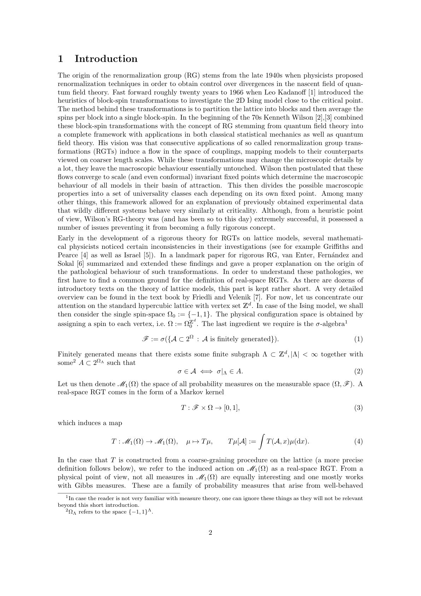
<figcaption class="paper-figure-caption"><b>Fig 1.</b> Low-resolution page preview, page 2</figcaption>
</figure>
<figure class="paper-figure-card">
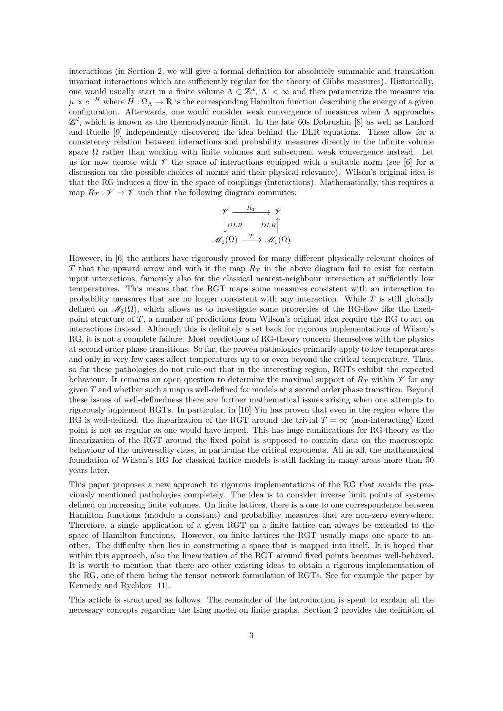
<figcaption class="paper-figure-caption"><b>Fig 2.</b> Low-resolution page preview, page 3</figcaption>
</figure>
<figure class="paper-figure-card">
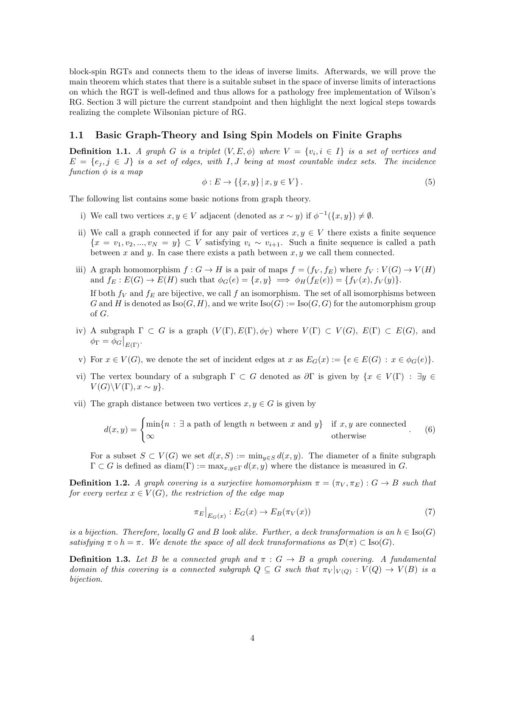
<figcaption class="paper-figure-caption"><b>Fig 3.</b> Low-resolution page preview, page 4</figcaption>
</figure>
<figure class="paper-figure-card">
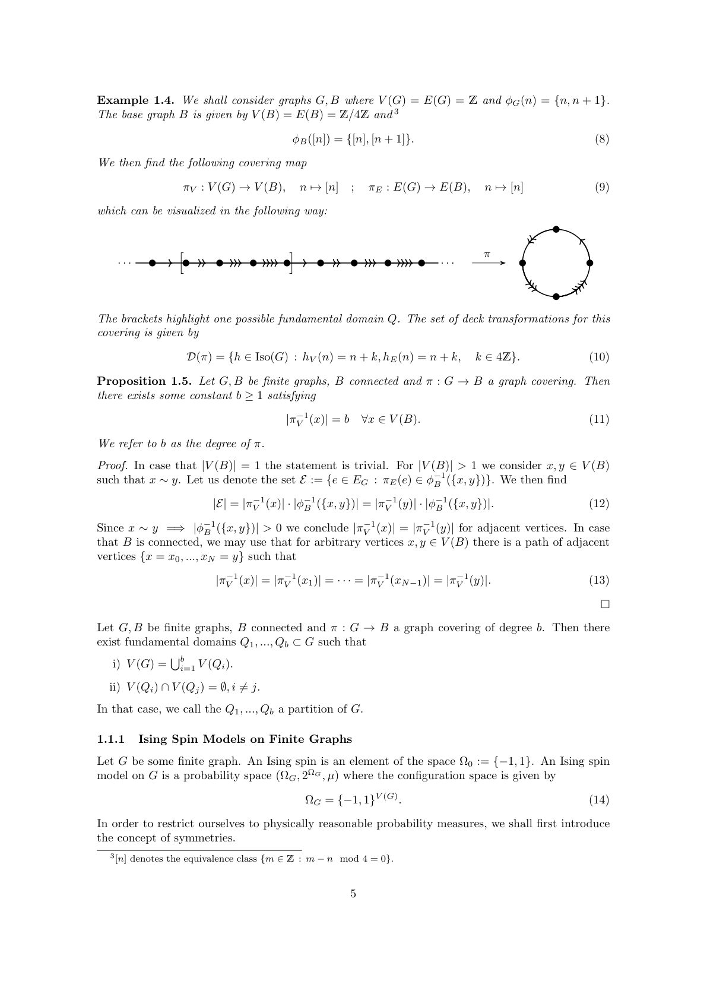
<figcaption class="paper-figure-caption"><b>Fig 4.</b> Low-resolution page preview, page 5</figcaption>
</figure>
<figure class="paper-figure-card">
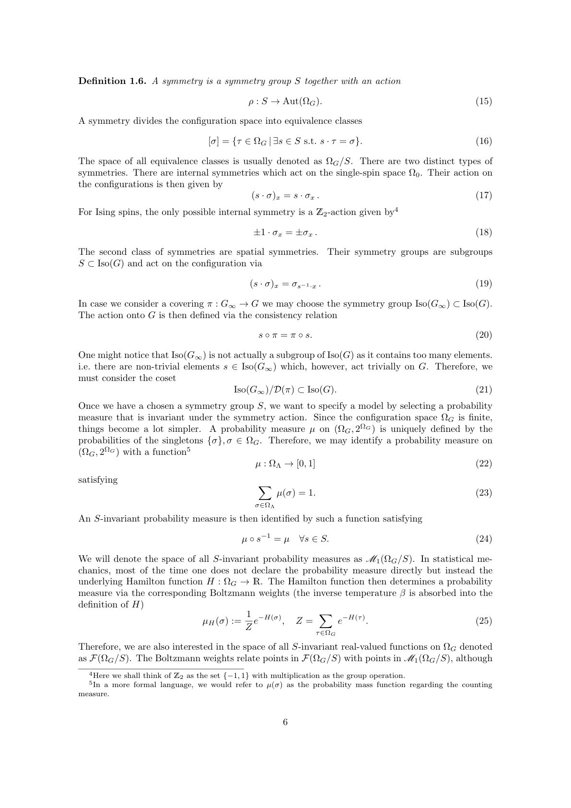
<figcaption class="paper-figure-caption"><b>Fig 5.</b> Low-resolution page preview, page 6</figcaption>
</figure>
</div>

<p><strong>Summary.</strong> This paper presents a novel, mathematically rigorous framework for Wilson's Renormalization Group theory by employing inverse limits of finite systems. It successfully defines a continuous RG map on the space of physical Hamiltonians, thereby avoiding pathologies found in previous rigorous attempts. This provides a powerful new tool to study critical phenomena and fixed points in statistical mechanics.</p>
<p><strong>Why it may be interesting.</strong> While focused on classical statistical mechanics, the rigorous mathematical machinery developed—especially the use of functional spaces, continuity proofs, and flow analysis—is highly relevant to understanding the dynamics of open quantum systems or quantum field theories where renormalization is key.</p>
<details>
<summary>Detailed structure</summary>
<p><strong>Main problem.</strong> To develop a mathematically rigorous and pathology-free framework for Wilson's Renormalization Group (RG) theory.</p>
<p><strong>Main result.</strong> The authors establish a continuous RG map on a quotient space of Hamilton functions, proving the framework's mathematical soundness and providing a path to study fixed points.</p>
<p><strong>Method.</strong> The core method involves using inverse limits of finite systems and defining the RG transformation on the space of physical interactions ($V_{	ext{phys}}$) to ensure mathematical consistency.</p>
<p><strong>Model / system.</strong> The theory is applied to the Ising model on the hypercubic lattice ($\mathbb{Z}^d$), analyzing the flow of interactions (Hamilton functions) in the infinite volume limit.</p>
<p><strong>Key observables.</strong> RG flow, fixed points (e.g., $H=0$), critical exponents, and the norm $\lVert [\hat{H}] 
Vert_{\hat{V}}$ used to measure convergence.</p>
<p><strong>Important parameters / regimes.</strong> The decay rate of interactions ($\Phi$), the lattice dimension ($d$), and the coupling constants ($eta$).</p>
<p><strong>Assumptions / limitations.</strong> The framework assumes the existence of a suitable space $V_{	ext{phys}}$ and relies on proving the continuity of the RG map $R$ on this space.</p>
<p><strong>Paper structure.</strong> The paper builds from defining block-spin RGTs on finite graphs using inverse limits, establishing the map $R: V_{	ext{phys}} 	o V_{	ext{phys}}$, and finally analyzing the flow properties on the quotient space $\hat{V} = V_{	ext{phys}}/R$.</p>
</details>
<details>
<summary>Abstract</summary>
<p>It has been over fifty years since Kenneth Wilson had his Nobel-prize-winning ideas on the renormalization group. In this time frame, despite many attempts, no mathematical results have implemented Wilson's vision to a satisfactory degree. Although a number of predictions stemming from the renormalization group framework have been proven to date, these proofs usually rely on alternative ideas and do not cover the full predictive power of Wilson's renormalization group. The discovery of pathologies within rigorous implementations of renormalization group transformations have further reduced the enthusiasm of the mathematics community for this subject. This paper presents a novel framework to implement Wilson's original idea in a rigorous manner based on inverse limits of finite systems. Doing so, one avoids these pathologies and hence obtains a mathematically sound framework for Wilson's renormalization group. This opens up a completely new path to tackle some of the existing problems in rigorous renormalization group theory like the existence of non-trivial fixed points.</p>
</details>
<p><sub><a href="#top">↑ back to top</a></sub></p>

<p><a id="paper-2609.17727"></a></p>
<h3 id="scalar-quasinormal-and-quasibound-states-of-weakly-magnetized-ernst-schwarzschild-spacetime-a-confluent-heun-wronskian-approach"><a href="http://arxiv.org/abs/2609.17727v1">Scalar quasinormal and quasibound states of weakly magnetized Ernst--Schwarzschild spacetime: a confluent-Heun Wronskian approach</a></h3>
<p><strong>Authors:</strong> Danilo S. Ferreira, Luis B. Castro<br>
<strong>Type:</strong> theory · <strong>Category:</strong> other · <strong>PDF:</strong> <a href="https://arxiv.org/pdf/2609.17727v1">https://arxiv.org/pdf/2609.17727v1</a><br>
<strong>Analysis basis:</strong> full PDF text, analyzed in chunks
<strong>Topic relevance:</strong> <code>quantum measurements</code> <strong>2/5</strong> · <code>Keldysh / 2PI / non-Gaussian methods</code> <strong>1/5</strong> · <code>analog quantum simulation</code> <strong>1/5</strong> · <code>methods for driven-dissipative</code> <strong>1/5</strong></p>
<div class="figure-strip-hint">↔ Scroll figures horizontally</div>
<div class="paper-figures-scroll">
<figure class="paper-figure-card">
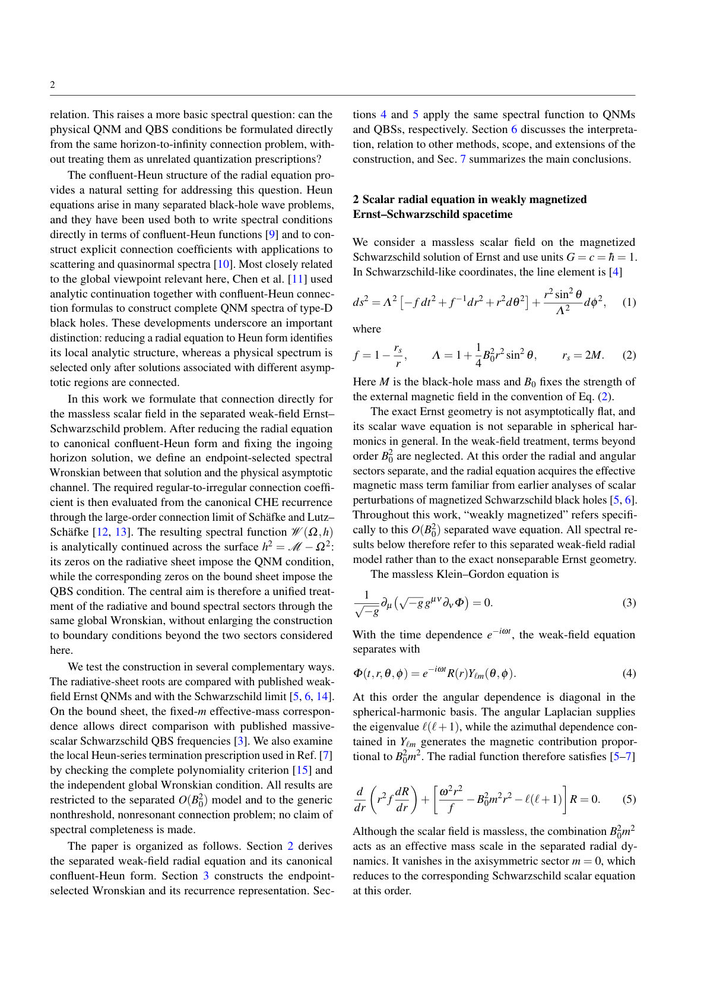
<figcaption class="paper-figure-caption"><b>Fig 1.</b> Low-resolution page preview, page 2</figcaption>
</figure>
<figure class="paper-figure-card">
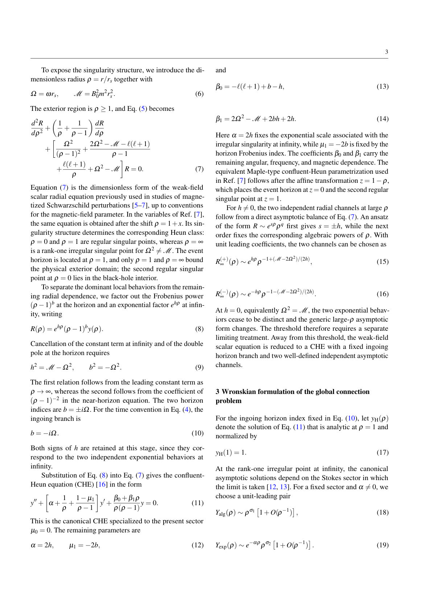
<figcaption class="paper-figure-caption"><b>Fig 2.</b> Low-resolution page preview, page 3</figcaption>
</figure>
<figure class="paper-figure-card">
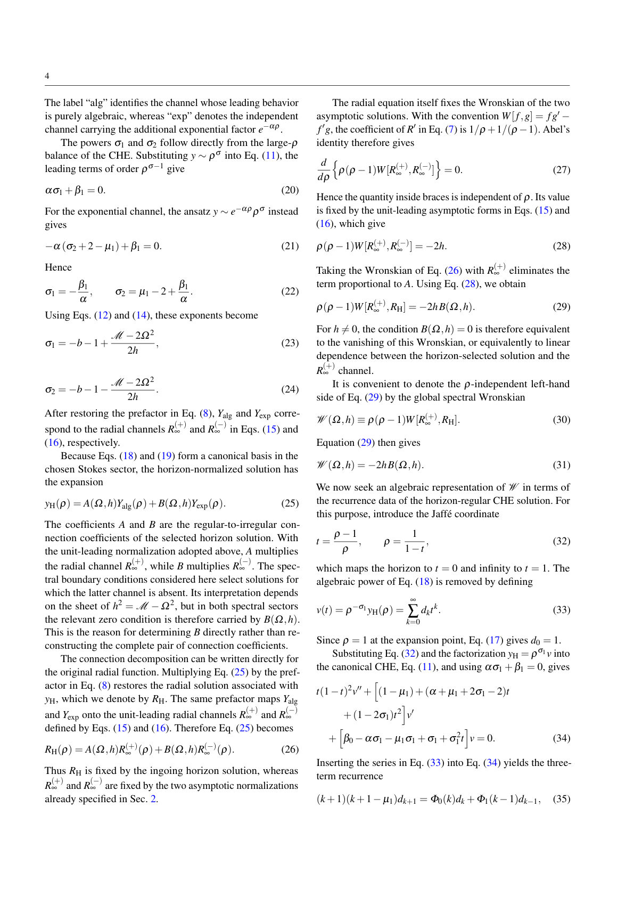
<figcaption class="paper-figure-caption"><b>Fig 3.</b> Low-resolution page preview, page 4</figcaption>
</figure>
<figure class="paper-figure-card">
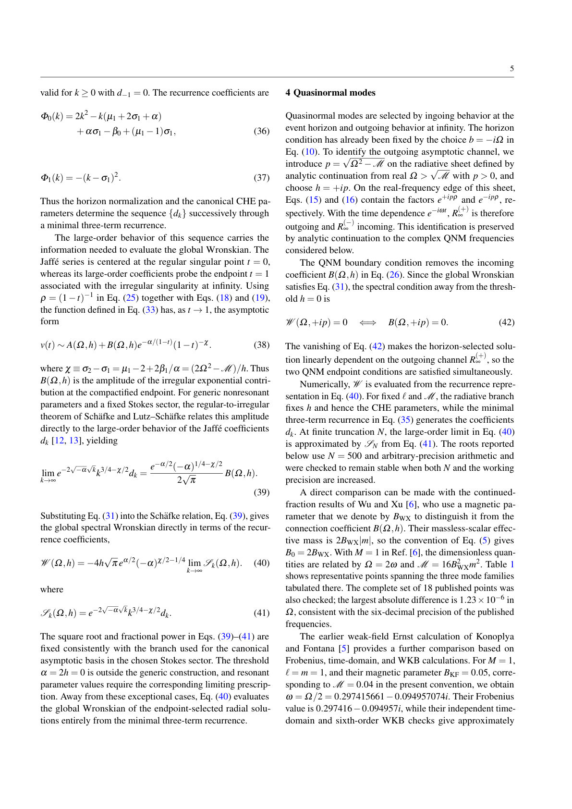
<figcaption class="paper-figure-caption"><b>Fig 4.</b> Low-resolution page preview, page 5</figcaption>
</figure>
<figure class="paper-figure-card">
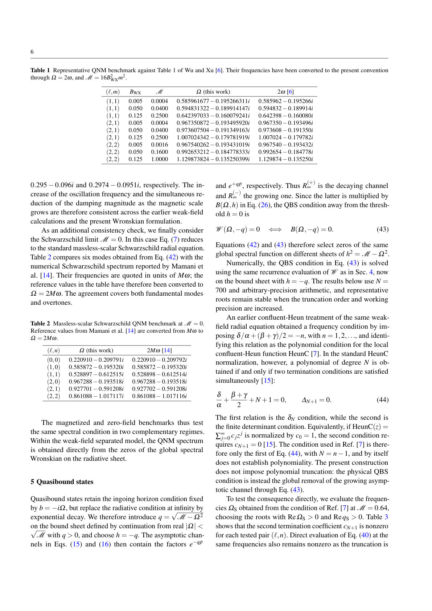
<figcaption class="paper-figure-caption"><b>Fig 5.</b> Low-resolution page preview, page 6</figcaption>
</figure>
</div>

<p><strong>Summary.</strong> This work develops a unified mathematical framework to calculate the quasinormal and quasibound modes for scalar fields in a weakly magnetized black hole spacetime. It achieves this by transforming the governing differential equation into a confluent-Heun form and defining the spectral condition via a global Wronskian. The method provides a robust, horizon-to-infinity spectral condition that matches established theoretical benchmarks.</p>
<p><strong>Why it may be interesting.</strong> While the core physics is general relativity/field theory, the mathematical machinery—reducing a physical boundary value problem to the zeros of a specific transcendental function (the Wronskian)—is highly relevant to open quantum systems and spectral analysis in other physical contexts.</p>
<details>
<summary>Detailed structure</summary>
<p><strong>Main problem.</strong> To provide a unified and rigorous method for determining the quasinormal-mode (QNM) and quasibound-state (QBS) spectra for a massless scalar field in a weakly magnetized Ernst--Schwarzschild spacetime.</p>
<p><strong>Main result.</strong> The spectral condition is unified by constructing an endpoint-selected spectral Wronskian, which successfully reproduces known weak-field benchmarks for both QNMs and QBSs.</p>
<p><strong>Method.</strong> The analysis reduces the Klein-Gordon equation to a radial confluent-Heun equation, whose spectral condition is determined by setting the global spectral Wronskian to zero.</p>
<p><strong>Model / system.</strong> The system is a massless scalar field propagating in a weakly magnetized Ernst--Schwarzschild spacetime. The analysis is restricted to the separated, weak-field approximation ($O(B_0^2)$) of the geometry.</p>
<p><strong>Key observables.</strong> Quasinormal mode frequencies ($\omega$) and quasibound state frequencies, determined as the zeros of the spectral Wronskian.</p>
<p><strong>Important parameters / regimes.</strong> Magnetic field strength ($B_0$), mass ($M$), angular number ($\ell$), and the frequency ($\Omega$).</p>
<p><strong>Assumptions / limitations.</strong> The results are strictly limited to the separated $O(B^2_0)$ weak-field model, and the method relies on the global spectral Wronskian condition rather than local polynomial termination.</p>
<p><strong>Figures summary.</strong> Tables compare calculated QNM frequencies against established benchmarks from the literature for varying magnetic fields and masses.</p>
<p><strong>Paper structure.</strong> The paper establishes the weak-field reduction to the confluent-Heun equation, derives the global spectral Wronskian from the recurrence relation, and then applies the zero-finding condition to unify the spectral determination for both radiative (QNM) and bound (QBS) states.</p>
</details>
<details>
<summary>Abstract</summary>
<p>We study the quasinormal-mode and quasibound-state spectra of a massless scalar field in weakly magnetized Ernst--Schwarzschild spacetime. In the separated $O(B_0^2)$ regime, the Klein--Gordon equation reduces to a radial confluent-Heun equation. We construct an endpoint-selected spectral Wronskian directly from the canonical confluent-Heun recurrence and its regular-to-irregular connection limit. Quasinormal modes and quasibound states are then obtained as zeros of the same analytic spectral function on the radiative and bound sheets, respectively, providing a unified treatment of the two spectral sectors within the separated weak-field problem. The resulting QNM and QBS frequencies agree with independent weak-field Ernst and massive-Schwarzschild benchmarks available in the literature. We further show, for representative cases, that the frequencies selected by the local Heun-series termination relation examined here do not satisfy the endpoint-selected quasibound-state condition. The construction therefore provides a direct horizon-to-infinity spectral condition for both radiative and bound states within the weak-field Ernst problem.</p>
</details>
<p><sub><a href="#top">↑ back to top</a></sub></p>

<p><a id="paper-2609.18035"></a></p>
<h3 id="unconventional-linear-transverse-exciton-transport-in-valley-layer-coupling-two-dimensional-materials"><a href="http://arxiv.org/abs/2609.18035v1">Unconventional linear transverse exciton transport in valley-layer coupling two-dimensional materials</a></h3>
<p><strong>Authors:</strong> Ci Li<br>
<strong>Type:</strong> theory · <strong>Category:</strong> other · <strong>PDF:</strong> <a href="https://arxiv.org/pdf/2609.18035v1">https://arxiv.org/pdf/2609.18035v1</a><br>
<strong>Analysis basis:</strong> full PDF text, analyzed in chunks
<strong>Topic relevance:</strong> <code>Keldysh / 2PI / non-Gaussian methods</code> <strong>2/5</strong> · <code>analog quantum simulation</code> <strong>1/5</strong> · <code>methods for driven-dissipative</code> <strong>1/5</strong> · <code>quantum measurements</code> <strong>1/5</strong></p>
<div class="figure-strip-hint">↔ Scroll figures horizontally</div>
<div class="paper-figures-scroll">
<figure class="paper-figure-card">
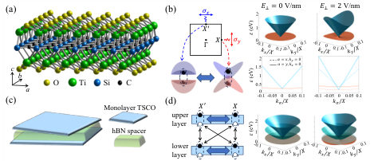
<figcaption class="paper-figure-caption"><b>Fig 1.</b> FIG. 1. (color online) (a) Crystal structure of monolayer TiSiCO (TSCO). (b) Left: first Brillouin zone of monolayer TSCO and valley excitons at X and X′ with opposite opti- cal selection rules; large blue double arrows denote interval- ley electron–hole exchange interaction. Right: exciton dis- persion of the monolayer effective Hamiltonian (1) for differ- ent perpendicular electric fields E⊥, shown in both 3D view and selected momentum cuts. (c) Schematic of twisted bi- layer TSCO separated by a hexagonal boron nitride spacer. (d) Left: intralayer excitons in twisted bilayer TSCO and their couplings; black double arrows denote F¨orster cou- pling. Right: exciton dispersion of the...</figcaption>
</figure>
<figure class="paper-figure-card">
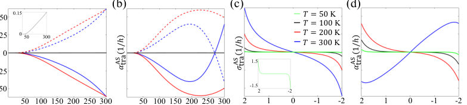
<figcaption class="paper-figure-caption"><b>Fig 2.</b> FIG. 3. (color online) (a)-(d) Numerical calculation of σAS tra and αAS tra [Eq. (3)] for monolayer exciton Hamiltonian (1), as functions of temperature T and perpendicular electric field E⊥. Insets in (a) and (c) show enlarged views near E⊥= 0 and at T = 50 K, respectively. In (a) and (b), blue solid (dashed) curves correspond to E⊥= −2(2) eV/nm, red solid (dashed) curves to E⊥= −1(1) eV/nm, and black curves to E⊥= 0 eV/nm. min(εn) −µ = 10 meV; In (c) and (d), µ = 0.176 eV. τ = 1 ps for all plots.</figcaption>
</figure>
<figure class="paper-figure-card">
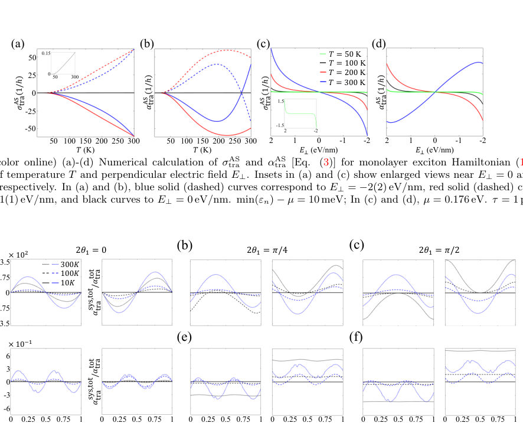
<figcaption class="paper-figure-caption"><b>Fig 3.</b> FIG. 4. (color online) (a) Left: Numerical calculations of total transverse conductivity in system layer for twisted bilayer exciton Hamiltonian (2), σsys,tot tra ≡σsys H + σsys,AS tra sin(2θ1) + σsys,S tra cos(2θ1) [Eqs. (3) and (4)] (blue curves), and σtot tra = σsys,tot tra + σenv,tot tra (black curves), as functions of twisted angle θ and temperature T, in the unit of 1/h. Right: Corresponding results for αsys,tot tra and αtot tra. Here perpendicular electric field E⊥= −2 eV/nm. (b) and (c): Similar plots as in (a), but for different in-plane driving force direction θ1. (d)-(f): Similar plots as (a)-(c), but for E⊥= 0 eV/nm. In all plots, min(εn) −µ = 10 meV and τ = 1 ps.</figcaption>
</figure>
<figure class="paper-figure-card">
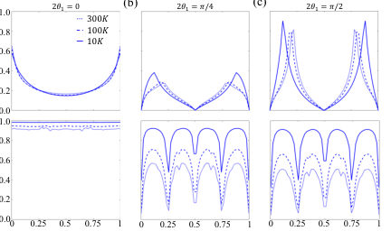
<figcaption class="paper-figure-caption"><b>Fig 4.</b> FIG. 5. (color online) (a) Numerical calculation of Hall frac- tions rsys H ≡|σsys H |/(|σsys H |+|σsys,AS tra sin(2θ1)|+|σsys,S tra cos(2θ1)|) for different perpendicular electric field E⊥. (b) and (c): Sim- ilar plots as in (a), but for different in-plane driving force di- rection θ1. min(εn) −µ = 10 meV and τ = 1 ps in all plots.</figcaption>
</figure>
<figure class="paper-figure-card">
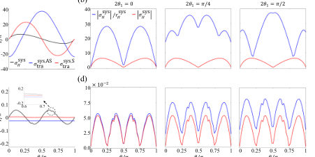
<figcaption class="paper-figure-caption"><b>Fig 5.</b> FIG. 6. (color online) (a) Numerical calculation of layer- resolved transverse exciton conductivities σsys H , σsys,AS tra , and σsys,S tra for perpendicular electric field E⊥= −2 eV/nm and temperature T = 100 K. (b) Corresponding quantities |σsys H |/rsys H = |σsys H | + |σsys,AS tra sin(2θ1)| + |σsys,S tra cos(2θ1)| and |σsys H |, for different in-plane driving force directions θ1. (c) and (d): Similar plots as (a) and (b), but for E⊥= 0 eV/nm. min(εn) −µ = 10 meV and τ = 1 ps in all plots.</figcaption>
</figure>
</div>

<p><strong>Summary.</strong> This theoretical work explores unconventional linear transverse exciton transport in valley-layer coupled 2D materials. By using an out-of-plane electric field ($E_{\perp}$), the authors demonstrate control over exciton dispersion anisotropy, which generates measurable transverse currents. This provides a versatile platform for engineering excitonic phenomena in next-generation quantum materials.</p>
<p><strong>Why it may be interesting.</strong> The ability to use an external electric field ($E_{\perp}$) to engineer and control specific, symmetry-protected transport channels (like anisotropy-induced currents) in excitonic systems is highly relevant for designing quantum light sources or detectors.</p>
<details>
<summary>Detailed structure</summary>
<p><strong>Main problem.</strong> The paper investigates unconventional linear transverse exciton transport (LTET) in valley-layer coupling (VLC) two-dimensional (2D) materials.</p>
<p><strong>Main result.</strong> The perpendicular electric field ($E_{\perp}$) acts as a powerful knob to control exciton-dispersion anisotropy, thereby inducing and tuning LTET in both monolayer and twisted bilayer structures.</p>
<p><strong>Method.</strong> Theoretical analysis using effective exciton Hamiltonians and semi-classical transport theory to calculate conductivity tensor components.</p>
<p><strong>Model / system.</strong> The system is VLC 2D materials, prototyped by TiSiCo, which exhibit valley coupling via crystal symmetry. The model extends to both monolayer and twisted bilayer configurations, incorporating interlayer Förster coupling.</p>
<p><strong>Key observables.</strong> Transverse conductivities ($\sigma_{AS}^{	ext{tra}}, \alpha_{AS}^{	ext{tra}}$) and the competition between anisotropy-induced responses and $\mathcal{T}$-even layer Hall/Nernst counterflow.</p>
<p><strong>Important parameters / regimes.</strong> Perpendicular electric field ($E_{\perp}$), twist angle ($  heta$), and temperature ($T$).</p>
<p><strong>Assumptions / limitations.</strong> The analysis focuses on the zero-Berry-curvature limit and assumes the exciton binding energy is omitted for simplicity.</p>
<p><strong>Figures summary.</strong> Figures illustrate the crystal structure, exciton dispersion dependence on $E_{\perp}$, and the calculated dependence of transverse conductivities on temperature, $E_{\perp}$, and twist angle for both monolayer and bilayer systems.</p>
<p><strong>Paper structure.</strong> The paper establishes the theoretical framework for LTET in VLC materials, first analyzing the monolayer response governed by anisotropy, and then extending the analysis to the twisted bilayer where multiple competing transport channels (anisotropy-driven vs. layer counterflow) coexist and are tunable.</p>
</details>
<details>
<summary>Abstract</summary>
<p>Valley-layer coupling (VLC) two-dimensional (2D) materials define a distinct class of quantum systems in which valleys are related by crystal, rather than time-reversal ($\mathcal{T}$) symmetry, enabling gate-controlled valley-contrasted layer polarization. Here we extend this concept to excitons. Using TiSiCo as a prototype VLC material, we show that a perpendicular electric field $E_{\perp}$ controls exciton- dispersion anisotropy and thereby generates unconventional linear transverse exciton transport in both monolayer and twisted bilayer structures. In the monolayer, this response is characterized by anisotropy-induced transverse conductivities, arising from the antisymmetric combination of diagonal elements in the conductivity tensor and strongly tunable by $E_{\perp}$. In the twisted bilayer, symmetry additionally permits transverse responses from the symmetric part of the conductivity tensor. Since intralayer excitons in different layers are connected by the Förster coupling, these symmetric and antisymmetric responses coexist and compete with the recently proposed $\mathcal{T}$-even layer Hall and Nernst exciton counterflow. This interplay is highly tunable by twisted angle, temperature, and the direction of the in-plane driving force, providing a route to disentangle distinct transverse exciton transport signals experimentally. Our results establish $E_{\perp}$ as a powerful knob for controlling exciton transport via VLC and identify VLC 2D materials as a promising platform for engineered excitonic phenomena.</p>
</details>
<p><sub><a href="#top">↑ back to top</a></sub></p>

<p><a id="paper-2609.18566"></a></p>
<h3 id="deep-learning-emergent-spacetime-from-fermionic-spectral-functions-in-holography"><a href="http://arxiv.org/abs/2609.18566v1">Deep learning emergent spacetime from fermionic spectral functions in holography</a></h3>
<p><strong>Authors:</strong> Koji Hashimoto, Hyun-Sik Jeong, Keun-Young Kim, Daichi Takeda, Kwan Yun<br>
<strong>Type:</strong> theory · <strong>Category:</strong> strongly correlated electrons · <strong>PDF:</strong> <a href="https://arxiv.org/pdf/2609.18566v1">https://arxiv.org/pdf/2609.18566v1</a><br>
<strong>Analysis basis:</strong> full PDF text, analyzed in chunks
<strong>Topic relevance:</strong> <code>Keldysh / 2PI / non-Gaussian methods</code> <strong>2/5</strong> · <code>methods for driven-dissipative</code> <strong>2/5</strong></p>
<div class="figure-strip-hint">↔ Scroll figures horizontally</div>
<div class="paper-figures-scroll">
<figure class="paper-figure-card">
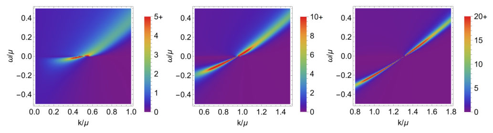
<figcaption class="paper-figure-caption"><b>Fig 1.</b> Figure 1. The fermionic spectral function A(ω, k) = 1 π Im G−(ω, k) of the extremal Reissner-Nordstr¨om AdS black hole for three representative probe fermion charges: Data A (q = 1, left), Data B (q = 1.56, middle), and Data C (q = 2, right). (a) Data A (νkF = 0.24 &lt; 1/2) displays a broad, incoherent peak with a non-linear dispersion ω∗(k) ≈(k −kF )2.08 and a vanishing quasiparticle residue, representing a non-Fermi liquid without long-lived excitations. (b) Data B (νkF = 1/2) realizes the marginal Fermi liquid regime with a quasi-linear dispersion ω∗(k) ≈ k−kF ln ∣k−kF ∣and a linear scattering rate Γ ∝ω, forming a moderately broad spectral ridge characteristic of strange metal...</figcaption>
</figure>
<figure class="paper-figure-card">
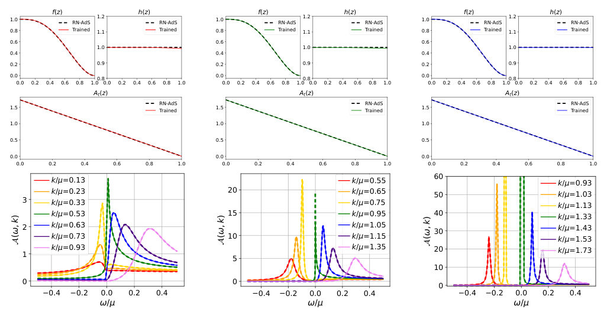
<figcaption class="paper-figure-caption"><b>Fig 2.</b> Figure 2. Reconstructed bulk profiles {f(z), h(z), At(z)} obtained from the quantum critical fermionic spectral data shown in Fig. 1: Data A (q = 1, left), Data B (q = 1.56, middle), and Data C (q = 2, right). Upper panels: The trained neural network profiles (colored curves) closely match the exact extremal Reissner-Nordstr¨om AdS black hole solutions (14) with µ = √</figcaption>
</figure>
<figure class="paper-figure-card">
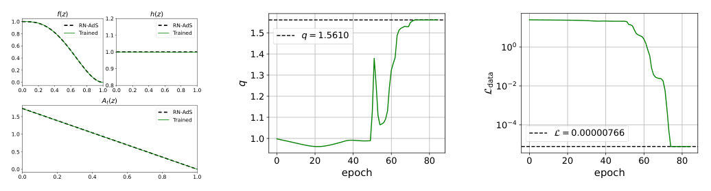
<figcaption class="paper-figure-caption"><b>Fig 3.</b> Figure 3. Simultaneous reconstruction of bulk profiles and probe fermion charge q trained on Data B (marginal Fermi liquid). Left: Reconstructed bulk metric and gauge fields compared against the target extremal Reissner-Nordstr¨om AdS background. Middle: Optimization trajectory of the trainable charge q, converging to qtrained = 1.5610 (target q = 1.56). Right: Evolution of the training loss during the hybrid Adam and L-BFGS optimization, reaching a final loss of L = 7.66 × 10−6.</figcaption>
</figure>
<figure class="paper-figure-card">
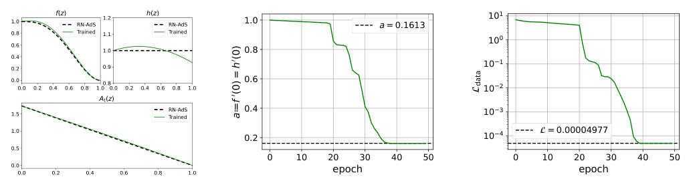
<figcaption class="paper-figure-caption"><b>Fig 4.</b> Figure 4. The trained results using Data B (q = 1.56) when relaxing the near-boundary derivative condition a = f ′(0) = h′(0). Left: The trained bulk metric functions f(z), h(z) and gauge potential At(z) (green solid lines) compared with the exact extremal Reissner-Nordstr¨om AdS background (black dashed lines). Middle: Evolution of the trainable slope parameter a during training, converging to atrained ≈0.1613. Right: Convergence of the training loss Ldata as a function of epoch, reaching a final loss ≈4.98 × 10−5.</figcaption>
</figure>
<figure class="paper-figure-card">
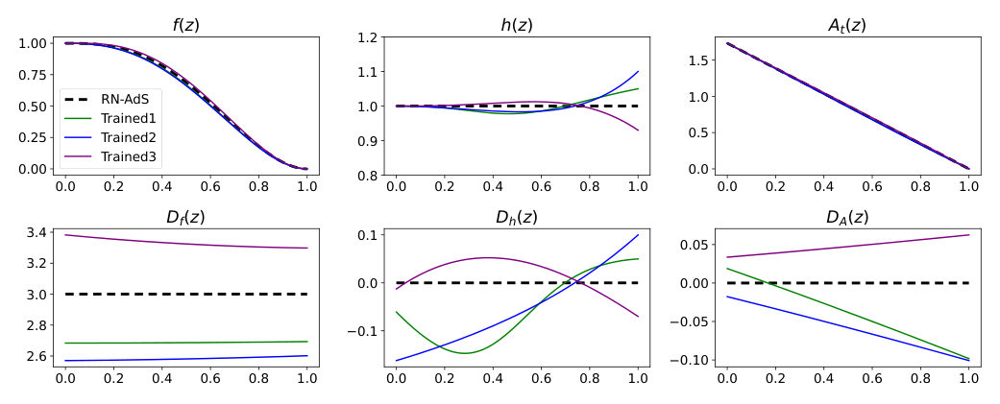
<figcaption class="paper-figure-caption"><b>Fig 5.</b> Figure 5. The trained bulk profiles (top) and the functions Df,h,A(z) (bottom) obtained with the Neural ODE at a = 0. The solid lines (green, blue, and purple) represent three different trained solutions, while the black dashed lines denote the exact extremal Reissner-Nordstr¨om AdS solution. The three solutions differ substantially from the Reissner-Nordstr¨om AdS solution, closely reproducing the same spectral function data, with residual losses as Ldata = 1.65 × 10−5, 5.92 × 10−4, and 5.05 × 10−4, respectively.</figcaption>
</figure>
</div>

<p><strong>Summary.</strong> This work uses physics-informed machine learning (Neural ODEs) to solve the holographic inverse problem, reconstructing the geometry of a charged AdS black hole from measured fermionic spectral functions. It successfully maps out the physics across three quantum critical regimes, confirming the utility of ML in extracting deep physical structure from boundary data.</p>
<p><strong>Why it may be interesting.</strong> The application of advanced ML techniques to solve fundamental problems in strongly correlated electron physics (strange metals) via holography provides a powerful, modern tool for theoretical condensed matter research.</p>
<details>
<summary>Detailed structure</summary>
<p><strong>Main problem.</strong> The paper tackles the holographic inverse problem: reconstructing the bulk spacetime and gauge field of a charged AdS black hole directly from boundary fermionic spectral functions.</p>
<p><strong>Main result.</strong> The physics-informed machine learning framework successfully reconstructs the extremal Reissner-Nordström AdS geometry across three distinct quantum critical regimes, demonstrating the network isolates the IR CFT universality.</p>
<p><strong>Method.</strong> It employs a Neural Ordinary Differential Equations (Neural ODE) framework, constrained by physical boundary conditions, to solve the inverse problem posed by the holographic Dirac equation.</p>
<p><strong>Model / system.</strong> The context is holographic condensed matter theory (AdS/CMT), modeling a probe Dirac fermion in the background of a charged AdS black hole, relevant for studying quantum critical points.</p>
<p><strong>Key observables.</strong> Boundary fermionic spectral function, $A(\omega,k) = rac{1}{\pi} 	ext{Im} G^-(\omega,k)$, and the reconstructed bulk spacetime metrics and gauge fields.</p>
<p><strong>Important parameters / regimes.</strong> Three quantum critical regimes defined by the $U(1)$ probe charge: non-Fermi liquid, marginal Fermi liquid (strange metal), and Fermi-liquid-like states.</p>
<p><strong>Assumptions / limitations.</strong> The framework assumes the validity of the AdS/CFT correspondence and uses hard constraints (UV asymptotics, horizon regularity) within the Neural ODE architecture.</p>
<p><strong>Figures summary.</strong> The notes describe figures illustrating the reconstruction of the extremal RN geometry and comparing recovered profiles to known analytical solutions, highlighting the detection of geometrical degeneracy.</p>
<p><strong>Paper structure.</strong> The paper follows a structure reviewing the holographic Dirac equations, establishing benchmark spectral functions, detailing the Neural ODE framework, demonstrating the reconstruction process, and finally exploring the resulting geometrical degeneracy.</p>
</details>
<details>
<summary>Abstract</summary>
<p>We present a physics-informed machine learning framework based on Neural Ordinary Differential Equations that solves the holographic inverse problem: reconstructing the bulk spacetime and gauge field of a charged AdS black hole directly from boundary fermionic spectral functions. Encoding the UV asymptotics, horizon regularity, and zero temperature extremality as hard constraints in the neural network architecture, our framework reliably reconstructs the extremal Reissner-Nordström AdS geometry across three quantum critical regimes set by the $U(1)$ probe charge---non-Fermi liquid, marginal Fermi liquid (strange metal), and Fermi-liquid-like states---and can jointly infer the probe charge itself to sub-percent accuracy. Relaxing the near-AdS boundary constraint uncovers a geometrical degeneracy: bulk profiles that differ throughout the radial direction but share the same near-horizon $AdS_2 \times \mathbb{R}^2$ data reproduce identical spectral functions near the Fermi surface. This isospectral non-uniqueness is precisely the bulk degeneracy expected on general holographic grounds at zero temperature, and its spontaneous emergence across independent training runs shows that the network isolates the IR CFT universality rather than overfitting a single UV completion.</p>
</details>
<p><sub><a href="#top">↑ back to top</a></sub></p>

<p><a id="paper-2609.17669"></a></p>
<h3 id="full-eigenstate-thermalization-in-quantum-field-theory-free-cumulants-and-gravitational-scrambling"><a href="http://arxiv.org/abs/2609.17669v1">Full Eigenstate Thermalization in Quantum Field Theory: Free Cumulants and Gravitational Scrambling</a></h3>
<p><strong>Authors:</strong> Ricardo Espíndola, Viktor Jahnke<br>
<strong>Type:</strong> theory · <strong>Category:</strong> statistical mechanics · <strong>PDF:</strong> <a href="https://arxiv.org/pdf/2609.17669v1">https://arxiv.org/pdf/2609.17669v1</a><br>
<strong>Analysis basis:</strong> full PDF text, analyzed in chunks
<strong>Topic relevance:</strong> <code>Keldysh / 2PI / non-Gaussian methods</code> <strong>2/5</strong> · <code>analog quantum simulation</code> <strong>1/5</strong> · <code>scars &amp; prethermalization</code> <strong>1/5</strong></p>
<div class="figure-strip-hint">↔ Scroll figures horizontally</div>
<div class="paper-figures-scroll">
<figure class="paper-figure-card">
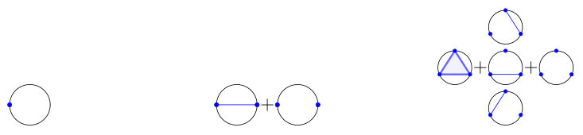
<figcaption class="paper-figure-caption"><b>Fig 1.</b> Figure 1: Diagrammatic representation of set partitions for small values of n. Panels (a), (b), and (c) show the partitions of the sets {1}, {1, 2}, and {1, 2, 3}, respectively. In each diagram, elements are placed on a circle in cyclic order, and blocks are represented by chords connecting the corresponding points.</figcaption>
</figure>
<figure class="paper-figure-card">
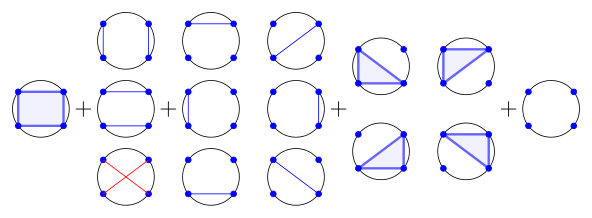
<figcaption class="paper-figure-caption"><b>Fig 2.</b> Figure 2: Diagrammatic representation of all set partitions of {1, 2, 3, 4}, drawn on a circle with the elements ordered cyclically. Each diagram corresponds to a partition π ∈P(4), with blocks represented by chords connecting the corresponding points. The unique crossing partition is highlighted by intersecting chords drawn in red, while all non-crossing partitions π ∈NC(4) are shown in blue.</figcaption>
</figure>
<figure class="paper-figure-card">
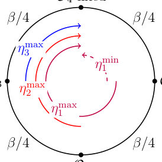
<figcaption class="paper-figure-caption"><b>Fig 3.</b> Figure 3: Imaginary-time deformations of four equally spaced operator insertions on the thermal circle. Fixing O4 by time-translation invariance, the boundary of the analyticity domain allows maximal positive displacements ηmax 3 = β/4, ηmax 2 = β/2, and ηmax 1 = 3β/4 while preserving the cyclic ordering. For O1, the opposite boundary is ηmin 1 = −β/4 (dashed line). Therefore −β/4 &lt; η1 &lt; 3β/4.</figcaption>
</figure>
<figure class="paper-figure-card">
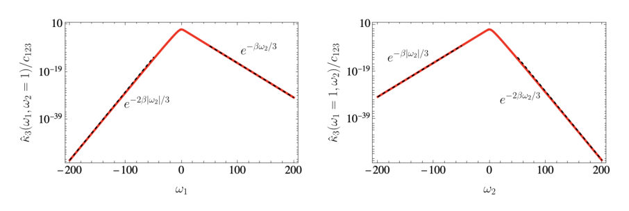
<figcaption class="paper-figure-caption"><b>Fig 4.</b> Figure 4: Large-frequency behavior of the Fourier transform of the third regulated free cumulant bκ3(ω1, ω2). Here we set β = 1 and ∆1 = ∆2 = ∆3 = 1. In the left panel, ω2 = 1 is fixed while ω1 →±∞; in the right panel, ω1 = 1 is fixed while ω2 →±∞. The black dashed lines indicate the directional exponential decay rates predicted by the full-ETH bound (4.85). In both panels, the numerical asymptotics are consistent with these predicted rates.</figcaption>
</figure>
<figure class="paper-figure-card">
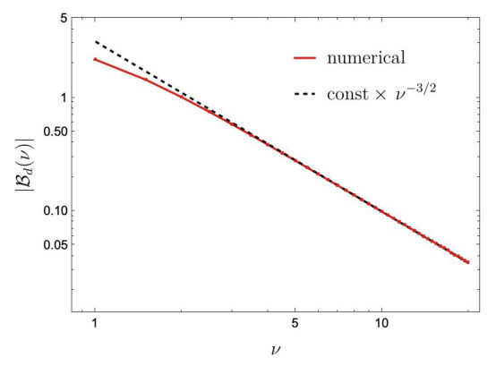
<figcaption class="paper-figure-caption"><b>Fig 5.</b> Figure 5: Large-|ν| behavior of the transverse factor |Bb(ν)| in Rindler–AdS3/CFT2 for ∆V = ∆W = 1 and b = |x1 −x2| = 1. The numerical result is compared with the asymptotic power law const × |ν|−3/2 (black dashed line).</figcaption>
</figure>
</div>

<p><strong>Summary.</strong> This theoretical paper establishes a rigorous link between Full Eigenstate Thermalization (full ETH) in QFT and the concept of gravitational scrambling. By employing thermal analyticity and free probability theory, the authors derive quantitative bounds that are shown to be saturated by holographic CFTs. This work provides a unified mathematical framework connecting thermalization, non-commutative probability, and quantum gravity effects.</p>
<p><strong>Why it may be interesting.</strong> While highly abstract, the connection established between thermalization dynamics (ETH) and fundamental algebraic structures (free cumulants, modular theory) provides powerful, non-perturbative tools applicable to understanding thermalization in complex quantum many-body systems, including those relevant to AMO physics.</p>
<details>
<summary>Detailed structure</summary>
<p><strong>Main problem.</strong> The paper investigates Full Eigenstate Thermalization (full ETH) in Quantum Field Theory and establishes a deep connection between full ETH, free cumulants, and the concept of gravitational scrambling.</p>
<p><strong>Main result.</strong> The authors derive directional large-frequency bounds for full ETH functions, showing that holographic CFTs saturate these bounds at fourth order, thus linking full ETH to gravitational scrambling.</p>
<p><strong>Method.</strong> The methodology combines thermal analyticity, free probability theory (using free cumulants), and advanced algebraic techniques from quantum field theory, particularly those related to modular flow and the AdS/CFT correspondence.</p>
<p><strong>Model / system.</strong> The analysis is conducted in continuum Quantum Field Theories (QFTs), focusing on thermal Conformal Field Theories (CFTs) and utilizing holographic models derived from the AdS/CFT correspondence.</p>
<p><strong>Key observables.</strong> Full ETH smooth functions, two- and three-point functions in thermal CFTs, fourth-order free cumulants, and the holographic eikonal scattering matrix phase shift.</p>
<p><strong>Important parameters / regimes.</strong> The analysis examines behavior at low orders (two/three-point functions) and the first appearance of dynamics at fourth order, relating to the asymptotic freeness limit.</p>
<p><strong>Assumptions / limitations.</strong> The derivation relies on the complex-time analyticity of regulated thermal free cumulants and assumes the semiclassical near-horizon regime for the holographic identification.</p>
<p><strong>Paper structure.</strong> The paper is structured logically, first reviewing the algebraic framework for gravitational scrambling, then introducing free probability theory, deriving ETH constraints using analyticity, testing these bounds in CFTs, and concluding with the synthesis of the connection between ETH, free cumulants, and scrambling.</p>
</details>
<details>
<summary>Abstract</summary>
<p>Using thermal analyticity, we derive directional large-frequency bounds on the smooth functions entering full eigenstate thermalization in continuum quantum field theory. The strongest directions reproduce the scales previously identified for lattice systems, while the complete analyticity domain reveals a broader asymmetric multifrequency structure. In thermal two-dimensional conformal field theory, exact two- and three-point functions saturate the corresponding bounds. At fourth order, where genuine dynamical information first appears, we show that the holographic CFTs studied here saturate the strongest full-ETH bounds. These results establish a direct connection between full ETH, free cumulants, and gravitational scrambling, and are consistent with the emergence of asymptotic freeness realized by the gravitational scrambling algebra.</p>
</details>
<p><sub><a href="#top">↑ back to top</a></sub></p>

<p><a id="paper-2609.18691"></a></p>
<h3 id="universal-entanglement-embezzlement-and-divergent-nonlocal-magic-from-generic-local-chaotic-quantum-evolution"><a href="http://arxiv.org/abs/2609.18691v1">Universal entanglement embezzlement and divergent nonlocal magic from generic local chaotic quantum evolution</a></h3>
<p><strong>Authors:</strong> Matias Karjula, Teemu Ojanen, Kim Pöyhönen, Tapio Ala-Nissila, Moein N. Ivaki<br>
<strong>Type:</strong> theory · <strong>Category:</strong> other · <strong>PDF:</strong> <a href="https://arxiv.org/pdf/2609.18691v1">https://arxiv.org/pdf/2609.18691v1</a><br>
<strong>Analysis basis:</strong> full PDF text, analyzed in chunks
<strong>Topic relevance:</strong> <code>non-equilibrium universality</code> <strong>2/5</strong> · <code>analog quantum simulation</code> <strong>1/5</strong> · <code>scars &amp; prethermalization</code> <strong>1/5</strong></p>
<div class="figure-strip-hint">↔ Scroll figures horizontally</div>
<div class="paper-figures-scroll">
<figure class="paper-figure-card">
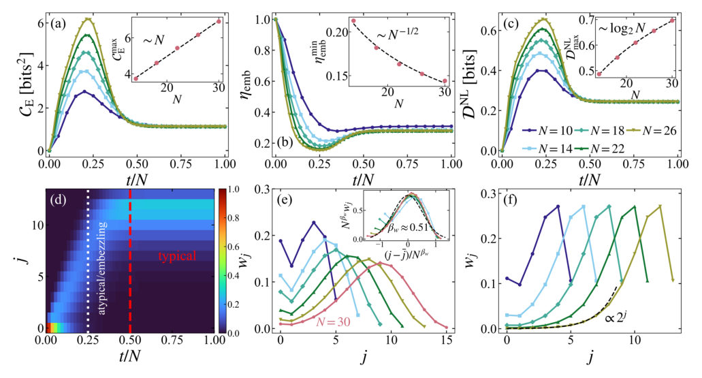
<figcaption class="paper-figure-caption"><b>Fig 1.</b> FIG. 1. Dynamical creation and destruction of embezzling capabilities in the Haar-random model. At their corresponding extrema, the ensemble-averaged quantities scale as (a) EU[CE] ∝N, (b) EU[ηemb] ∝N −βη with βη ≈1/2, and (c) EU[DNL] ∝ log2 N. Further, DNL,Haar ≈0.244, CHaar E ≈1.124, and ηHaar emb ≈0.278. The dotted and dashed lines in (d) denote the atypical embezzling point and the crossover to the typical regime, respectively, for N =26 qubits. (e) and (f) display the average dyadic shell distributions EU[wj] for the optimal embezzling and Haar-typical points, respectively. Results are averages over 50–400 independent realizations.</figcaption>
</figure>
<figure class="paper-figure-card">
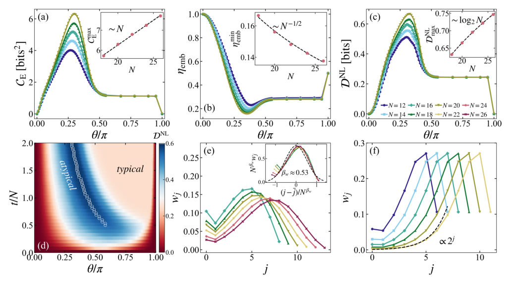
<figcaption class="paper-figure-caption"><b>Fig 2.</b> FIG. 2. Parametric creation and destruction of the scale-free embezzling structure in a tunable random circuit model. Quantities in (a), (b), (c) and their overall scaling behavior are consistent with those of the Haar-random model. Plotted for a fixed depth t = 2N. In (d) we further plot the resource landscape displaying a parametric-dynamical ridge, along which nonlocal magic and embezzling power are maximized. The hollow circles denote θemb(t/N) = arg maxθ E[DNL(θ, t/N)] for t/N ≥0.5, which roughly separate the weakly structured and the strongly scrambled regimes. (e) and (f) show the shell profile for the embezzling point θ/π ≈0.35 and the typical point θ/π ≈0.8, respectively. The...</figcaption>
</figure>
<figure class="paper-figure-card">
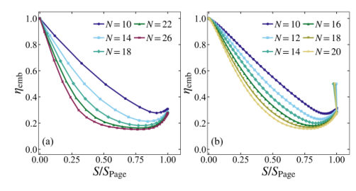
<figcaption class="paper-figure-caption"><b>Fig 3.</b> FIG. 3. A flow-like diagram in the ηemb–S/SPage plane, show- ing convergence toward a common submaximal-entanglement minimum of the embezzlement parameter with increasing sys- tem size. Shown for (a) the Haar-random circuit dynamics, and (b) the parametrically tunable random circuit.</figcaption>
</figure>
</div>

<p><strong>Summary.</strong> This paper demonstrates that generic local chaotic quantum evolution naturally generates intermediate quantum states capable of universal entanglement embezzlement. By analyzing the scaling of entanglement measures like $\eta_{emb}$ and $D_{NL}$ in random quantum circuits, the authors establish a physical pathway for creating these complex, non-equilibrium quantum resources. This links the concept of entanglement catalysis to the dynamics of chaotic quantum many-body systems.</p>
<p><strong>Why it may be interesting.</strong> This work provides a concrete, non-equilibrium physical mechanism—chaotic unitary evolution—for generating highly structured quantum resources (UEEs), which is crucial for understanding quantum resource theory in many-body physics.</p>
<details>
<summary>Detailed structure</summary>
<p><strong>Main problem.</strong> The study investigates whether generic local chaotic quantum evolution can dynamically generate intermediate quantum states possessing the multiscale entanglement-spectrum structure necessary for universal entanglement embezzlement (UEE).</p>
<p><strong>Main result.</strong> The authors show that such atypical, embezzling structures emerge generically during the evolution, well before the system reaches thermal equilibrium, and this process is linked to a divergence in nonlocal nonstabilizerness.</p>
<p><strong>Method.</strong> The analysis involves calculating and comparing entanglement measures, specifically entanglement embezzlement ($\eta_{emb}$) and nonlocal magic ($D_{NL}$), across different time scales of unitary evolution.</p>
<p><strong>Model / system.</strong> The primary model is a one-dimensional brickwork circuit of $N$ qubits subjected to local unitary evolution generated by independently sampled two-qubit Haar-random unitaries.</p>
<p><strong>Key observables.</strong> Entanglement Embezzlement ($\eta_{emb}$), Nonlocal Magic ($D_{NL}$), and the multiscale structure of the entanglement spectrum $\{\lambda_x\}$.</p>
<p><strong>Important parameters / regimes.</strong> System size $N$, time $t$, and the comparison between intermediate, Haar-typical, and late-time scrambling regimes.</p>
<p><strong>Assumptions / limitations.</strong> The analysis assumes that the competition between scrambling and typicality creates a distinct, measurable intermediate dynamical regime.</p>
<p><strong>Figures summary.</strong> Figure 1 illustrates the scaling laws for key quantities ($C_E, \eta_{emb}, D_{NL}$) and the weight distribution ($w_j$) in the Haar-random model, showing characteristic scaling with system size $N$.</p>
<p><strong>Paper structure.</strong> The paper develops the theoretical framework by defining UEE and nonlocal magic, applies these concepts to the Haar-random circuit model, and then analyzes the scaling behavior of the relevant observables across different dynamical regimes.</p>
</details>
<details>
<summary>Abstract</summary>
<p>We show that, starting from a product state, local unitary quantum evolutions generate intermediate states which exhibit a multiscale entanglement-spectrum structure required for universal entanglement embezzlement. This facilitates entanglement extraction from a catalyst many-body state while leaving it asymptotically unchanged. Remarkably, these atypical structures emerge generically at intermediate stages, well before reaching maximum entropy where thermalization has flattened out the spectral hierarchy. The resulting state is accompanied by nonlocal nonstabilizerness that diverges with the system size, consistent with a recently established equivalence between universal embezzlement and divergent nonlocal magic. Thus, without any fine tuning, a chaotic quantum evolution generates intermediate states which form a universal family of catalytic reservoirs.</p>
</details>
<p><sub><a href="#top">↑ back to top</a></sub></p>

<p><a id="paper-2609.18312"></a></p>
<h3 id="rdt-based-upper-bounds-on-the-largest-average-submatrix-values"><a href="http://arxiv.org/abs/2609.18312v1">RDT based upper bounds on the largest average submatrix values</a></h3>
<p><strong>Authors:</strong> Mihailo Stojnic<br>
<strong>Type:</strong> theory · <strong>Category:</strong> statistical mechanics · <strong>PDF:</strong> <a href="https://arxiv.org/pdf/2609.18312v1">https://arxiv.org/pdf/2609.18312v1</a><br>
<strong>Analysis basis:</strong> full PDF text, analyzed in chunks
<strong>Topic relevance:</strong> <code>Keldysh / 2PI / non-Gaussian methods</code> <strong>2/5</strong> · <code>analog quantum simulation</code> <strong>1/5</strong></p>
<div class="figure-strip-hint">↔ Scroll figures horizontally</div>
<div class="paper-figures-scroll">
<figure class="paper-figure-card">
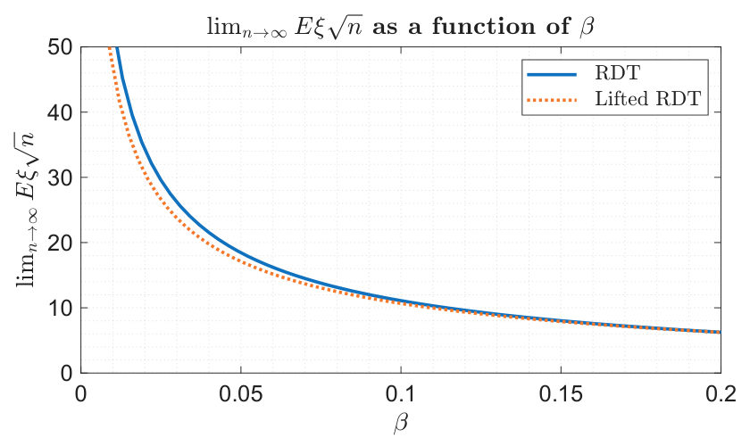
<figcaption class="paper-figure-caption"><b>Fig 1.</b> Figure 1: RDT and Lifted RDT upper bounds on the Largest average submatrix value limn→∞Eξ√n as functions of β.</figcaption>
</figure>
<figure class="paper-figure-card">
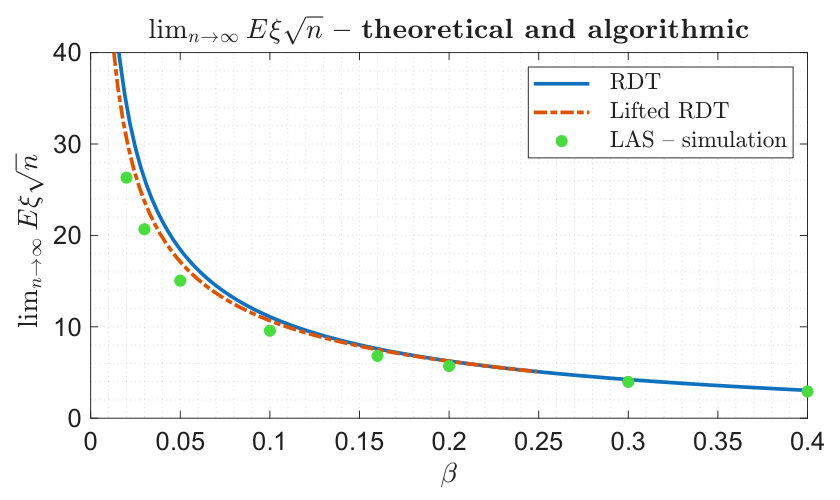
<figcaption class="paper-figure-caption"><b>Fig 2.</b> Figure 2: Largest average submatrix value limn→∞Eξ√n – theoretical (RDT and Lifted RDT) versus algorithmic (LAS).</figcaption>
</figure>
</div>

<p><strong>Summary.</strong> This paper tackles the challenging statistical problem of finding upper bounds for the largest average submatrix value in random matrices. The authors introduce a novel Random Duality Theory (RDT) framework to rigorously characterize these bounds. By developing plain and lifted RDT variants, they provide explicit, improved upper bounds that match established results in the limit of small submatrices.</p>
<p><strong>Why it may be interesting.</strong> While the core topic is random matrix theory, the mathematical techniques involving duality, bounding, and analyzing phase transitions in high-dimensional random structures are highly relevant to understanding complexity in quantum information and many-body systems.</p>
<details>
<summary>Detailed structure</summary>
<p><strong>Main problem.</strong> The paper studies statistical variants of the classical largest average submatrix problem (LASP) for random matrices.</p>
<p><strong>Main result.</strong> The authors developed a Random Duality Theory (RDT) framework to derive explicit, closed-form upper bounds on the largest average submatrix values, showing improvements over previous bounds.</p>
<p><strong>Method.</strong> The primary method is the development and application of a generic Random Duality Theory (RDT) framework, comparing plain and lifted variants to establish rigorous upper bounds.</p>
<p><strong>Model / system.</strong> The analysis focuses on an $m 	imes n$ matrix $A$ whose elements are independent standard normal random variables. The problem is analyzed in the linear regime where submatrix dimensions are proportional to the original matrix dimensions.</p>
<p><strong>Key observables.</strong> The largest average submatrix value ($\xi$), scaled by $\sqrt{n}$, which is the primary quantity of interest.</p>
<p><strong>Important parameters / regimes.</strong> Dimensionality proportionality parameters ($\alpha, eta_1, eta_2$) and the regime where these parameters approach zero (small submatrices).</p>
<p><strong>Assumptions / limitations.</strong> The elements of the matrix $A$ are assumed to be independent standard normal random variables, and the analysis focuses on the asymptotic linear regime.</p>
<p><strong>Figures summary.</strong> Figure 2 compares the theoretical predictions (RDT and Lifted RDT) against algorithmic predictions (LAS) for the largest average submatrix value across different dimensions.</p>
<p><strong>Paper structure.</strong> The paper introduces the LASP in the statistical regime, develops the generic RDT framework, applies plain RDT to obtain initial bounds, introduces and utilizes a lifted RDT variant for tighter bounds, and finally validates these results by showing agreement with known replica and sublinear results in the small submatrix limit.</p>
</details>
<details>
<summary>Abstract</summary>
<p>We study statistical variants of the classical largest average submatrix problem. For small submatrices (where the dimension is less than linearly proportional to the original matrix), the problem is typically well understood and believed to exhibit the statistical-computational gap (SCG). However, analytical treatment of both the information-theoretic and algorithmic aspects of the linear regime remains challenging, and no mathematically rigorous results have yet arrived anywhere close to proving or disproving SCG existence in this setting.   Focusing on the linear regime, we make strong progress in several key directions: 1) We develop a generic Random Duality Theory (RDT) framework to characterize largest average submatrix values. 2) Using the plain RDT variant, we obtain closed-form upper bounds as explicit functions of dimensionality proportionality parameters. 3) We demonstrate that a lifted RDT variant strictly improves upon the plain RDT within a certain linear range of submatrix dimensions. 4) For small submatrices where the dimensional proportionality constants approach zero, we prove that our results match both the replica results from [34] (obtained via one-step replica symmetry breaking) and the sublinear results from [18,45].</p>
</details>
<p><sub><a href="#top">↑ back to top</a></sub></p>

<p><a id="paper-2609.17663"></a></p>
<h3 id="full-eigenstate-thermalization-in-quantum-field-theory-and-gravitational-scrambling"><a href="http://arxiv.org/abs/2609.17663v1">Full Eigenstate Thermalization in Quantum Field Theory and Gravitational Scrambling</a></h3>
<p><strong>Authors:</strong> Ricardo Espíndola, Viktor Jahnke<br>
<strong>Type:</strong> theory · <strong>Category:</strong> statistical mechanics · <strong>PDF:</strong> <a href="https://arxiv.org/pdf/2609.17663v1">https://arxiv.org/pdf/2609.17663v1</a><br>
<strong>Analysis basis:</strong> full PDF text, analyzed in chunks
<strong>Topic relevance:</strong> <code>Keldysh / 2PI / non-Gaussian methods</code> <strong>2/5</strong></p>
<div class="figure-strip-hint">↔ Scroll figures horizontally</div>
<div class="paper-figures-scroll">
<figure class="paper-figure-card">
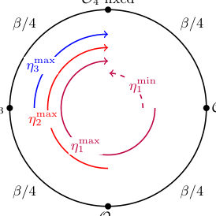
<figcaption class="paper-figure-caption"><b>Fig 1.</b> FIG. 1: Imaginary-time deformations of four equally spaced operator insertions on the thermal circle. Fix- ing O4 by time-translation invariance, the boundary of the analyticity domain allows maximal positive displace- ments ηmax 3 = β/4, ηmax 2 = β/2, and ηmax 1 = 3β/4 while preserving the cyclic ordering. For O1, the oppo- site boundary is ηmin 1 = −β/4 (dashed line). Hence the allowed displacement satisfies −β/4 &lt; η1 &lt; 3β/4, which implies α4(+ˆe1) = β/4 and α4(−ˆe1) = 3β/4.</figcaption>
</figure>
<figure class="paper-figure-card">
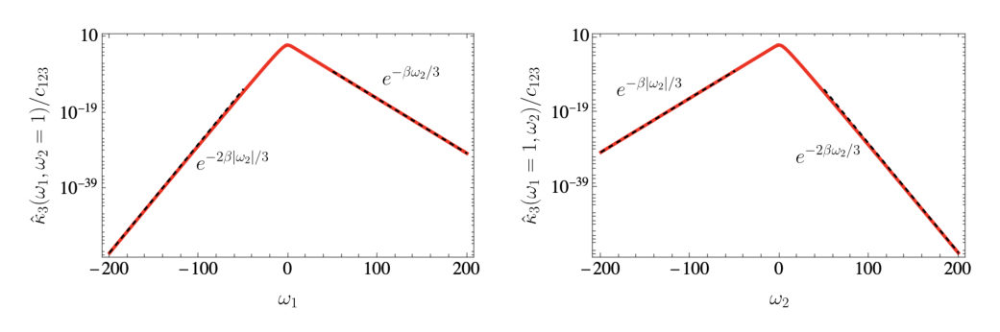
<figcaption class="paper-figure-caption"><b>Fig 2.</b> FIG. 2: Large-frequency behavior of the Fourier transform of the third regulated free cumulant bκ3(ω1, ω2) for β = 1 and ∆1 = ∆2 = ∆3 = 1. Left: ω2 = 1 with ω1 →±∞. Right: ω1 = 1 with ω2 →±∞. Black dashed lines show the directional exponential decay rates predicted by Eq. (18).</figcaption>
</figure>
</div>

<p><strong>Summary.</strong> This paper derives rigorous, directional bounds on the correlation functions characterizing full eigenstate thermalization in QFT. By analyzing the analyticity domain in the complex frequency plane, the authors demonstrate that both CFT correlators and gravitational scattering processes saturate these bounds. This provides strong evidence that holographic models realize the full constraints predicted by ETH in continuum quantum systems.</p>
<p><strong>Why it may be interesting.</strong> The work provides a rigorous, continuum field-theoretic method to test the limits of thermalization, which is a central topic in non-equilibrium statistical mechanics and quantum chaos, relevant to understanding thermalization in complex quantum systems.</p>
<details>
<summary>Detailed structure</summary>
<p><strong>Main problem.</strong> To derive directional large-frequency bounds on the smooth functions governing full eigenstate thermalization (full ETH) in continuum quantum field theory (QFT) and holographic systems.</p>
<p><strong>Main result.</strong> The analysis shows that thermal conformal correlators saturate the second- and third-order bounds, and the leading gravitational Regge contribution saturates the strongest fourth-order direction, confirming ETH constraints in holographic CFTs.</p>
<p><strong>Method.</strong> The authors use thermal analyticity, deforming contours in the complex plane, and deriving bounds on free cumulants ($\kappa_n$) to analyze the large-frequency behavior of correlation functions.</p>
<p><strong>Model / system.</strong> The study applies to continuum Quantum Field Theory (QFT) and holographic systems (AdS/CFT), using concepts like Out-of-Time-Order Correlators (OTOCs) and free probability theory to characterize thermalization.</p>
<p><strong>Key observables.</strong> Full ETH smooth functions ($F^{(n)}$), thermal free cumulants ($\kappa_n$), two- and three-point correlation functions, and the fourth free cumulant ($\kappa_4$).</p>
<p><strong>Important parameters / regimes.</strong> Large frequency scale ($W 	o \infty$), energy differences ($\vec{\omega}$), and the inverse temperature ($eta$).</p>
<p><strong>Assumptions / limitations.</strong> The derivation assumes that the function $C(\vec{\eta})$ is finite in the interior of the analyticity domain and grows at most algebraically near the boundaries.</p>
<p><strong>Figures summary.</strong> Figure 1 illustrates imaginary-time deformations of four operator insertions on the thermal circle, showing specific boundary displacements ($\eta_{\max}^3 = eta/4$, $\eta_{\max}^2 = eta/2$, $\eta_{\max}^1 = 3eta/4$). Figure 2 shows the saturation of the full-ETH bound for the three-point function in 2D CFT.</p>
<p><strong>Paper structure.</strong> The paper develops the theoretical framework by using thermal analyticity to derive directional bounds on free cumulants. It then demonstrates the saturation of these bounds using concrete calculations from 2D CFT and holographic models, particularly for the fourth free cumulant.</p>
</details>
<details>
<summary>Abstract</summary>
<p>Using thermal analyticity, we derive directional large-frequency bounds on the smooth functions entering full eigenstate thermalization in continuum quantum field theory. The strongest directions reproduce the scales previously identified for lattice systems, while the complete analyticity domain reveals an asymmetric multifrequency structure. Thermal conformal correlators saturate the second- and third-order bounds, and the leading gravitational Regge contribution saturates the strongest fourth-order direction.</p>
</details>
<p><sub><a href="#top">↑ back to top</a></sub></p>

<p><a id="paper-2609.19090"></a></p>
<h3 id="securing-quantum-error-correction-against-misleading-advice-from-ai-agents"><a href="http://arxiv.org/abs/2609.19090v1">Securing quantum error correction against misleading advice from AI agents</a></h3>
<p><strong>Authors:</strong> A. Barış Özgüler<br>
<strong>Type:</strong> theory · <strong>Category:</strong> quantum information and computing · <strong>PDF:</strong> <a href="https://arxiv.org/pdf/2609.19090v1">https://arxiv.org/pdf/2609.19090v1</a><br>
<strong>Analysis basis:</strong> full PDF text, analyzed in chunks
<strong>Topic relevance:</strong> <code>quantum measurements</code> <strong>2/5</strong></p>
<div class="figure-strip-hint">↔ Scroll figures horizontally</div>
<div class="paper-figures-scroll">
<figure class="paper-figure-card">
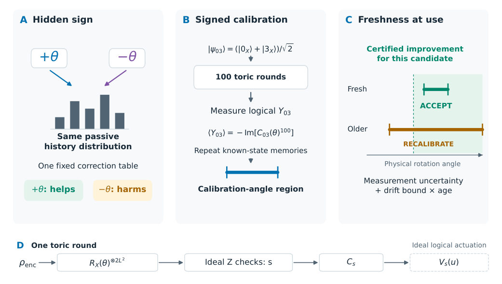
<figcaption class="paper-figure-caption"><b>Fig 1.</b> FIG. 1. Trusted calibration separates advice from authority over recovery. (a) Opposite rotation signs give identical passive syndrome-history distributions in the odd-distance square toric instrument defined in Sec. II, although one fixed correction table can help at one sign and harm at the other. (b) Known encoded calibration states undergo 100 rounds of the same toric instrument and a terminal logical Y03 measurement. Their sign-sensitive response supplies the missing observation; finite counts constrain the calibration angle. (c) The evaluator admits a proposed update only when sampling uncertainty and a justified drift bound certify recovery improvement at deployment; otherwise, the...</figcaption>
</figure>
<figure class="paper-figure-card">
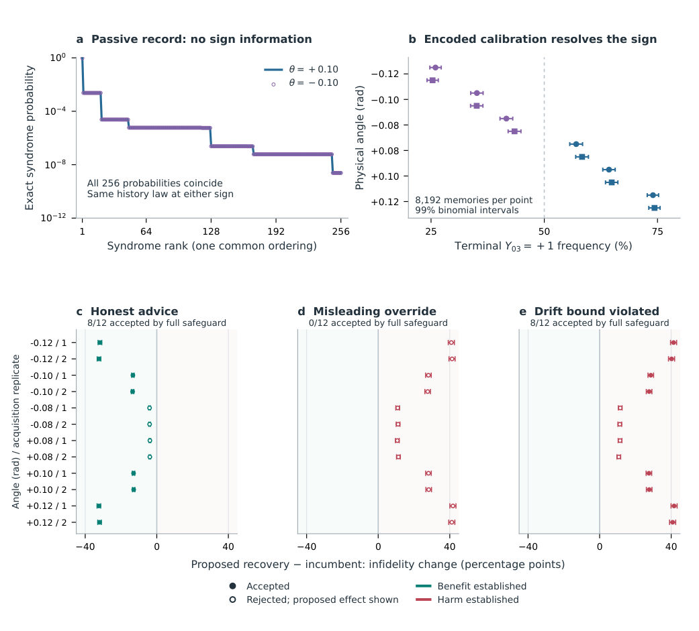
<figcaption class="paper-figure-caption"><b>Fig 2.</b> FIG. 2. The same passive record can conceal opposite recovery consequences. (a) All 256 one-round syndrome probabilities evaluated from the exact instrument for the encoded calibration state coincide at θ = ±0.10 rad, displayed in one common ordering. The passive-history theorem extends the sign blindness to every history length. (b) Terminal logical measurements distinguish the signs: each circle or square is one of two independently simulated 8192-memory acquisitions at each angle, with a 99% binomial interval. (c–e) Independent estimates of excess recovery infidelity for every Qwen proposal under honest advice, misleading advice, and a sign flip that violates the drift bound. The same 12...</figcaption>
</figure>
<figure class="paper-figure-card">
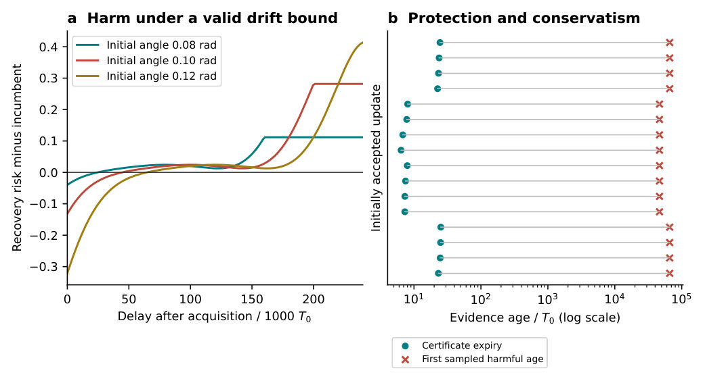
<figcaption class="paper-figure-caption"><b>Fig 3.</b> FIG. 3. Timing prevents harmful reuse under a valid drift premise, with conservative expiry. (a) Exact-channel excess recovery risk for the initially preferred correction after a continuous rate-limited ramp from three positive initial angles; negative-angle counterparts obey the same symmetry. Each point gives the recovery risk when the angle is held fixed during deployment at the value reached after the preceding drift. Positive excess risk denotes harm. The rate is 10−6 rad/T0; the ramp stops at the opposite initial angle. Acquisition precedes the ramp and deployment follows it. (b) Each row is one of the 16 independently sampled acquisitions initially admitted by confidence. Circles...</figcaption>
</figure>
<figure class="paper-figure-card">

<figcaption class="paper-figure-caption"><b>Fig 4.</b> FIG. 4. Protection, retained recovery benefit and the cost of stricter timing. (a) All observed outcomes under the stated premises: 20 independent workloads at 3 nested budgets for each controller and rule. Benefit/harm require independent paired deployment intervals below −0.001/above +0.001; other accepted-update outcomes remain unresolved. All rules check workload identity. (b) All 12 honest-advice Qwen instances (4 workloads, 3 budgets). Filled/open squares denote acceptance/rejection by the end-timestamp and whole-acquisition rules. Shaded rows identify 2 distance-5 updates additionally rejected when acquisition time is included. Their independent deployment intervals still establish...</figcaption>
</figure>
</div>

<p><strong>Summary.</strong> This work develops a security protocol for Quantum Error Correction against malicious or flawed advice from AI agents. By introducing a trusted calibration step, the authors resolve ambiguities in syndrome measurements that otherwise allow harmful updates. The framework establishes conditional guarantees, ensuring that recovery updates are only accepted if they can be mathematically certified to improve the system's state beyond known error bounds.</p>
<p><strong>Why it may be interesting.</strong> It provides a rigorous, information-theoretic framework for assessing trust in complex, adaptive quantum control loops, which is crucial for deploying quantum computation in noisy, real-world environments.</p>
<details>
<summary>Detailed structure</summary>
<p><strong>Main problem.</strong> The paper addresses the security of Quantum Error Correction (QEC) protocols when the advice or syndrome history is potentially misleading or manipulated by an external AI agent.</p>
<p><strong>Main result.</strong> Security is maintained by implementing a separate, trusted evaluator that requires certified improvement based on calibration uncertainty and drift bounds, effectively separating the 'advice' from the 'authority' of the recovery decision.</p>
<p><strong>Method.</strong> The authors analyze the joint distribution of passive syndrome histories, using signed calibration measurements to resolve sign ambiguities inherent in the syndrome records, and deriving rigorous bounds on accumulated risk (infidelity).</p>
<p><strong>Model / system.</strong> The primary model is the odd-distance square toric code, used to encode logical qubits. The analysis involves syndrome measurements, recovery operations, and the incorporation of calibration measurements to test the integrity of the advice.</p>
<p><strong>Key observables.</strong> Passive syndrome-history distributions, terminal logical measurement outcomes ($q_Y(	heta)$), and the excess infidelity ($D_u(	heta)$).</p>
<p><strong>Important parameters / regimes.</strong> The required improvement threshold ($\delta$), the calibration uncertainty, and the drift bound ($L_D v A$) are critical parameters for certification.</p>
<p><strong>Assumptions / limitations.</strong> The security guarantees rely on the assumption that the drift rate is bounded and that the calibration measurements provide accurate, sign-sensitive information.</p>
<p><strong>Figures summary.</strong> Figure 1 illustrates how trusted calibration separates advice from authority by resolving sign ambiguities in passive history distributions. Figure 2 shows the quantitative chain involving syndrome history, calibration, and the decision process using uncertainty and drift bounds.</p>
<p><strong>Paper structure.</strong> The paper first establishes the ambiguity in passive syndrome records (sign symmetry) and then introduces the role of signed calibration to resolve this. It develops a formal risk assessment framework using drift bounds and finally applies this framework to show that only certified improvements are accepted, while also analyzing the robustness of these bounds.</p>
</details>
<details>
<summary>Abstract</summary>
<p>Can an attacker turn influence over an artificial intelligence (AI) adviser into a harmful quantum error-correction update? We identify an ambiguity in passive syndrome records that obstructs recovery selection, then show how additional calibration measurements support certified recovery updates under uncertainty and drift. In an odd-distance square toric code with error-free preparation, syndrome measurements, and recovery operations, opposite coherent $X$ rotations produce identical passive syndrome-history distributions. Yet a fixed phase correction can help at one sign and harm at the other. A terminal logical measurement on known encoded calibration states supplies the missing sign information. A separate evaluator accepts an update only when calibration uncertainty and a justified drift bound certify improvement over the current recovery, without assuming that the adviser recommends correctly. In simulated advice attacks, calibration-confidence checks reject harmful proposals while retaining beneficial updates under honest advice. We derive sufficient limits on calibration age that require improvement through deployment. In matched simulations, a validated channel-specific bound retains more beneficial updates than the general bound after accounting for evaluation time, while preventing the tested harmful activations under the stated drift assumption. A separate surface-code experiment includes stochastic circuit faults and noise changing during acquisition. Deterministic controllers achieve at least as many beneficial updates with the same observations. Violating the drift assumption permits harmful acceptance in the toric experiment. The results identify information required for recovery selection, establish conditional guarantees against harmful updates, and quantify the recovery improvements forgone through conservative acceptance.</p>
</details>
<p><sub><a href="#top">↑ back to top</a></sub></p>

<p><a id="paper-2609.17970"></a></p>
<h3 id="the-fourier-uncertainty-principle-through-the-lens-of-infinite-banded-matrices"><a href="http://arxiv.org/abs/2609.17970v1">The Fourier Uncertainty Principle Through the Lens of Infinite Banded Matrices</a></h3>
<p><strong>Authors:</strong> Cameron L. Williams, Lara C. Ortelli, Gael Silva<br>
<strong>Type:</strong> theory · <strong>Category:</strong> other · <strong>PDF:</strong> <a href="https://arxiv.org/pdf/2609.17970v1">https://arxiv.org/pdf/2609.17970v1</a><br>
<strong>Analysis basis:</strong> full PDF text, analyzed in chunks
<strong>Topic relevance:</strong> <code>Keldysh / 2PI / non-Gaussian methods</code> <strong>2/5</strong></p>
<div class="figure-strip-hint">↔ Scroll figures horizontally</div>
<div class="paper-figures-scroll">
<figure class="paper-figure-card">
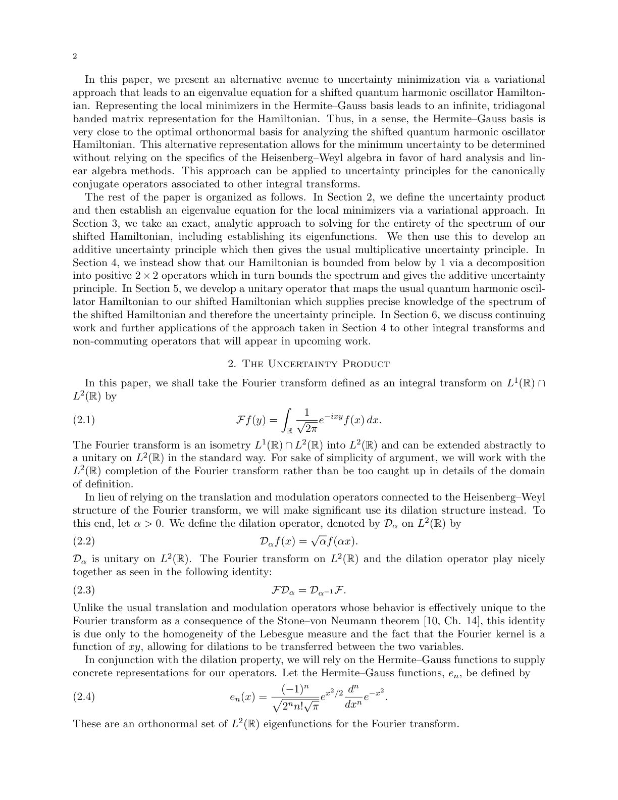
<figcaption class="paper-figure-caption"><b>Fig 1.</b> Low-resolution page preview, page 2</figcaption>
</figure>
<figure class="paper-figure-card">
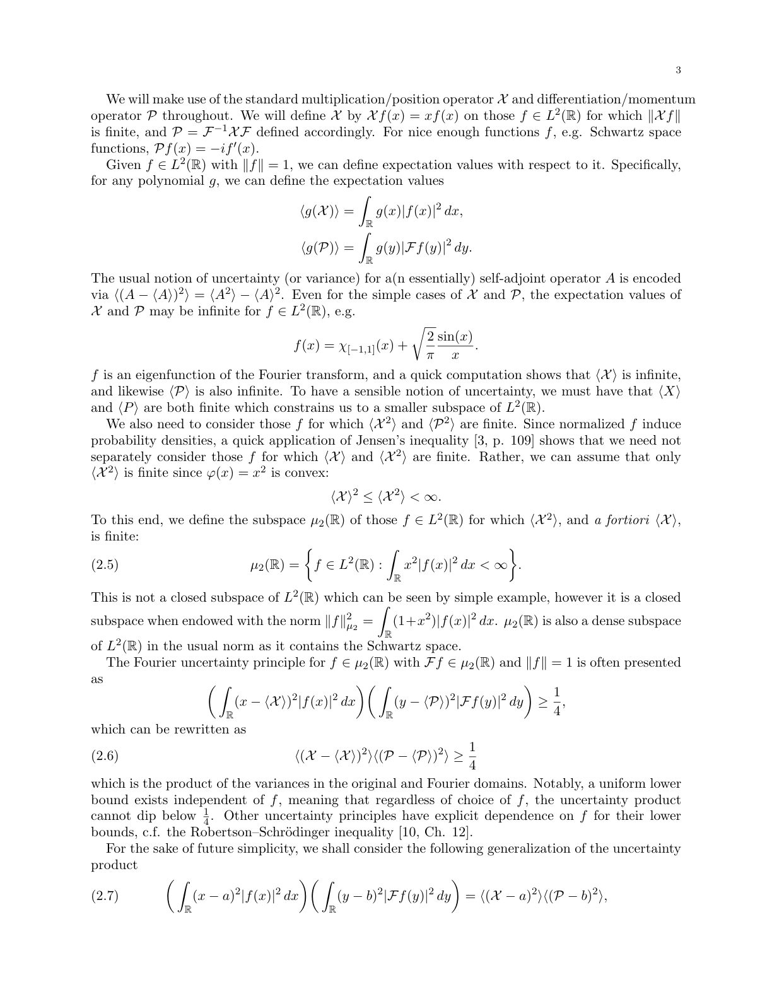
<figcaption class="paper-figure-caption"><b>Fig 2.</b> Low-resolution page preview, page 3</figcaption>
</figure>
<figure class="paper-figure-card">
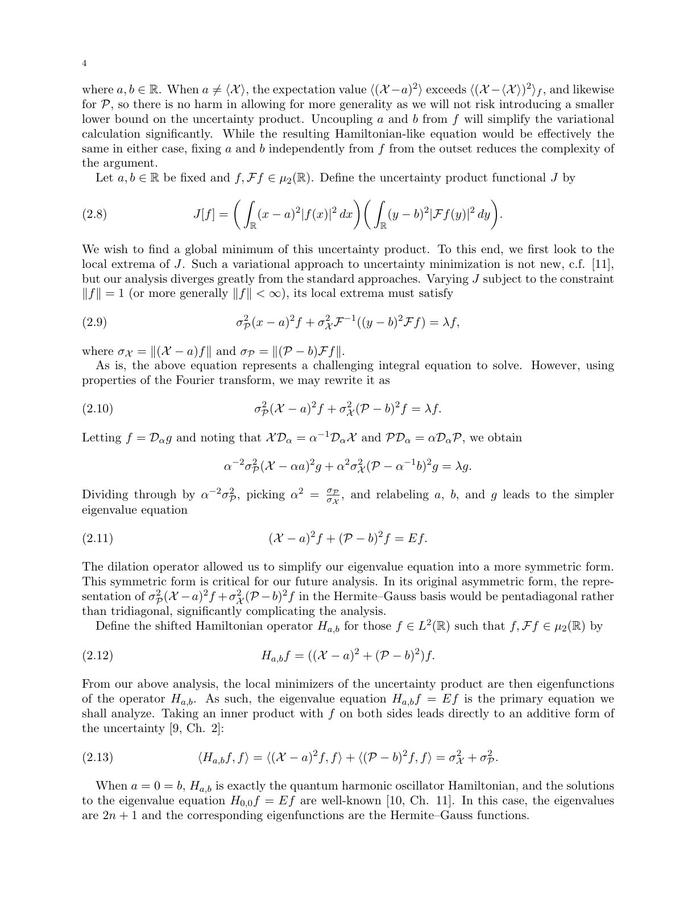
<figcaption class="paper-figure-caption"><b>Fig 3.</b> Low-resolution page preview, page 4</figcaption>
</figure>
<figure class="paper-figure-card">
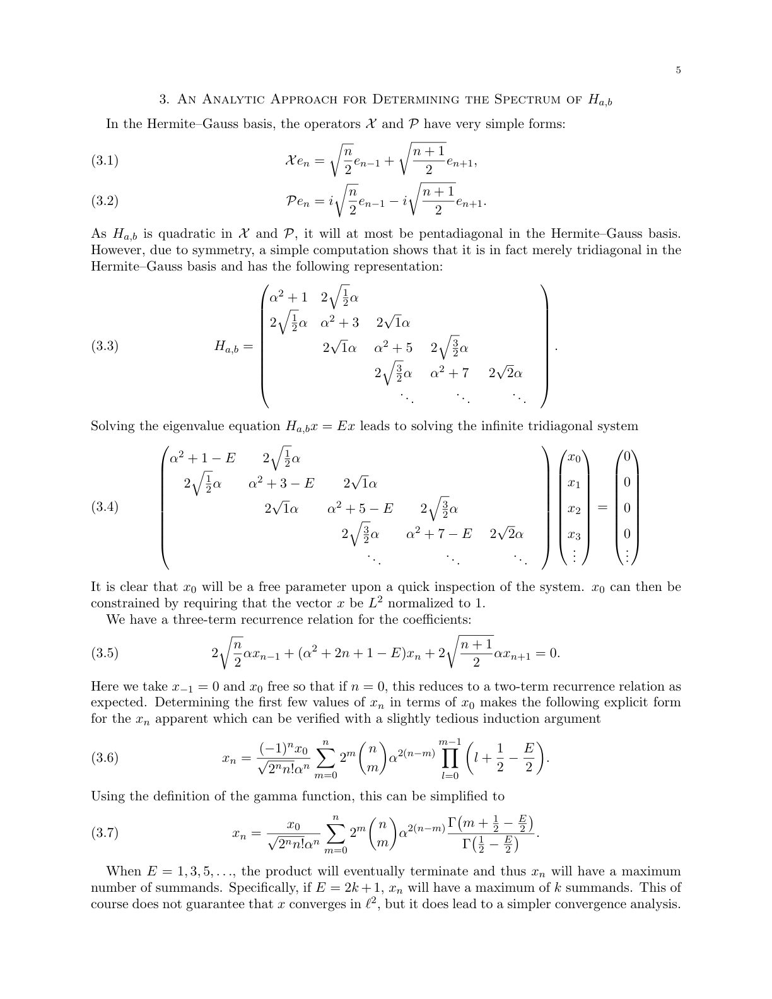
<figcaption class="paper-figure-caption"><b>Fig 4.</b> Low-resolution page preview, page 5</figcaption>
</figure>
<figure class="paper-figure-card">
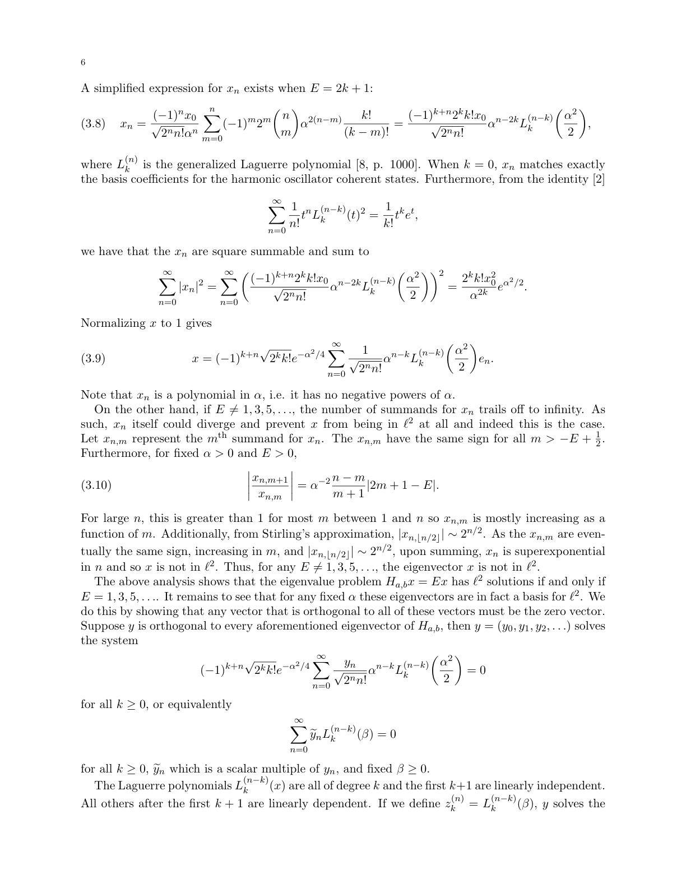
<figcaption class="paper-figure-caption"><b>Fig 5.</b> Low-resolution page preview, page 6</figcaption>
</figure>
</div>

<p><strong>Summary.</strong> This paper develops an alternative, generalized framework for analyzing the Fourier uncertainty principle by focusing on the eigenvalue problem of the shifted Hamiltonian $H_{a,b}$. It employs variational methods and matrix diagonalization in the Hermite-Gauss basis to solve this problem. The work confirms the principle while providing a more broadly applicable mathematical structure for studying uncertainty relations for various integral transforms.</p>
<p><strong>Why it may be interesting.</strong> The generalization of uncertainty principles beyond the standard Fourier transform setting, by developing a framework applicable to other canonically conjugate operators associated with different integral transforms, is highly relevant for theoretical physics.</p>
<details>
<summary>Detailed structure</summary>
<p><strong>Main problem.</strong> The paper investigates the Fourier uncertainty principle using variational methods that avoid relying on the standard Heisenberg-Weyl structure of the Fourier transform.</p>
<p><strong>Main result.</strong> The analysis establishes the eigenvalue problem for the shifted Hamiltonian $H_{a,b}$ and confirms the unitary equivalence between $H_{0,0}$ and $H_{a,b}$ via the displacement operator.</p>
<p><strong>Method.</strong> The authors employ three distinct approaches: a variational minimization of the uncertainty product, solving the resulting eigenvalue problem via recurrence relations in the Hermite-Gauss basis, and an algebraic approach using unitary transformations.</p>
<p><strong>Model / system.</strong> The analysis centers on the uncertainty product for functions $f$ and their Fourier transforms, governed by the shifted Hamiltonian $H_{a,b} = (X - a)^2 + (P - b)^2$. This Hamiltonian is analyzed in the context of the quantum harmonic oscillator.</p>
<p><strong>Key observables.</strong> The uncertainty product $J[f] = \langle(X - a)^2
angle \langle(P - b)^2
angle$, and the eigenvalues $E$ of $H_{a,b}$.</p>
<p><strong>Important parameters / regimes.</strong> The shift parameters $a$ and $b$, and the eigenvalue $E$.</p>
<p><strong>Assumptions / limitations.</strong> The analysis is restricted to functions $f$ in the subspace $\mu_2(\mathbb{R})$ where $\langle X^2 
angle$ is finite, and the algebraic approach is noted as being specific to the Fourier transform.</p>
<p><strong>Paper structure.</strong> The paper develops the uncertainty principle using a variational approach, analyzes the resulting eigenvalue problem $H_{a,b}f = Ef$ using matrix representations and recurrence relations, and concludes by establishing the unitary equivalence between $H_{0,0}$ and $H_{a,b}$ using displacement operators.</p>
</details>
<details>
<summary>Abstract</summary>
<p>In this paper, we investigate the Fourier uncertainty principle through infinite banded matrices by way of a variational approach to minimizing the uncertainty product. Traditional methods for analyzing the Fourier uncertainty principle rely heavily on the Heisenberg--Weyl structure that underlie the Fourier transform and therefore do not generalize well beyond this setting. We provide three distinct approaches to developing the uncertainty principle based on the spectrum of a shifted quantum harmonic oscillator Hamiltonian, $H_{a,b}$. In the Hermite--Gauss basis, $H_{a,b}$ has an infinite, tridiagonal form which is central to the analysis. One approach exactly solves for the spectrum through analytic methods, another decomposes $H_{a,b}$ into an infinite sum of $2\times 2$ matrices, and the third approach is an algebraic approach to establishing the spectrum via a unitary equivalence with the quantum harmonic oscillator. The approaches taken herein provide alternate avenues that are more broadly applicable to other canonically conjugate operators for other integral transforms which maintain a tridiagonal form.</p>
</details>
<p><sub><a href="#top">↑ back to top</a></sub></p>

<p><a id="paper-2609.17982"></a></p>
<h3 id="macroscopic-response-diagnoses-the-noise-sensitivity-of-terminal-outcomes"><a href="http://arxiv.org/abs/2609.17982v1">Macroscopic Response Diagnoses the Noise Sensitivity of Terminal Outcomes</a></h3>
<p><strong>Authors:</strong> Bo Li, Chaoqian Wang<br>
<strong>Type:</strong> theory · <strong>Category:</strong> statistical mechanics · <strong>PDF:</strong> <a href="https://arxiv.org/pdf/2609.17982v1">https://arxiv.org/pdf/2609.17982v1</a><br>
<strong>Analysis basis:</strong> full PDF text, analyzed in chunks
<strong>Topic relevance:</strong> <code>Keldysh / 2PI / non-Gaussian methods</code> <strong>1/5</strong> · <code>analog quantum simulation</code> <strong>1/5</strong> · <code>driven-dissipative phase transition</code> <strong>1/5</strong> · <code>non-equilibrium universality</code> <strong>1/5</strong> · <code>quantum measurements</code> <strong>1/5</strong></p>
<div class="figure-strip-hint">↔ Scroll figures horizontally</div>
<div class="paper-figures-scroll">
<figure class="paper-figure-card">
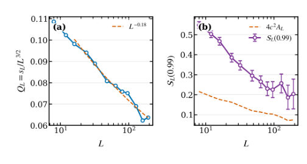
<figcaption class="paper-figure-caption"><b>Fig 1.</b> FIG. 1. Macroscopic diagnostic and microscopic response in the driven three-dimensional RFIM. (a) Normalized thresh- old slope QL = sL/L3/2 at R = 2.16; the dashed line is a finite-size power-law guide with exponent byF −3/2 = −0.184. (b) Normalized outcome correlation for disorder pairs with coordinatewise correlation c = 0.99. The dashed lower curve is the plug-in inverse-BKS lower bound 4c2R2Q2 L, evaluated using the point estimates of QL from panel (a). Error bars are bootstrap 95% confidence intervals. The data are consis- tent with the thermodynamic limits QL →0 and SL(c) →0, though they do not establish these limits definitively.</figcaption>
</figure>
<figure class="paper-figure-card">
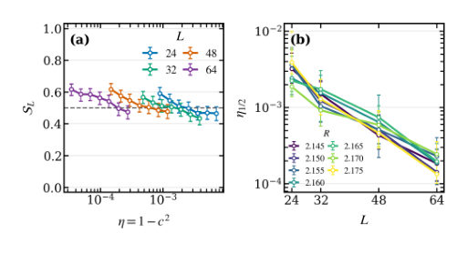
<figcaption class="paper-figure-caption"><b>Fig 2.</b> FIG. 2. Finite-size terminal-outcome noise crossover. (a) Raw outcome-correlation curves at R = 2.16 shift toward smaller noise variance η = 1 −c2 as L increases. (b) Half- correlation noise scales η1/2 for seven disorder strengths; er- ror bars are complete-row bootstrap 95% confidence intervals. The narrowing supports noise sensitivity over the simulated range, but we do not infer a universal crossover exponent or a critical disorder value.</figcaption>
</figure>
<figure class="paper-figure-card">
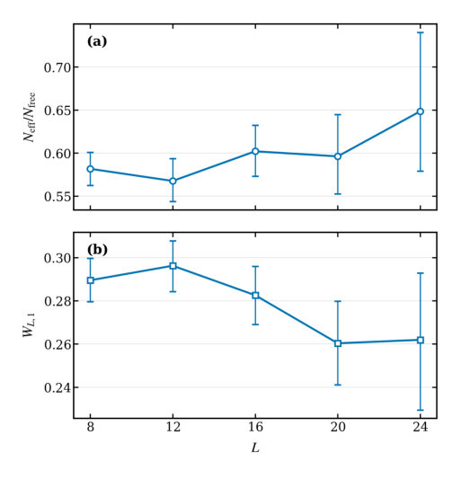
<figcaption class="paper-figure-caption"><b>Fig 3.</b> FIG. 3. Direct response measurement for the nontransitive, plane-seeded Stag-Hunt event. (a) Effective influence fraction Neff/Nfree. (b) Normalized first-order Hermite weight WL,1. Error bars are two-block chunk-bootstrap 95% intervals; the first-order intervals are obtained by normalizing the squared- influence intervals by the measured Bernoulli variance.</figcaption>
</figure>
</div>

<p><strong>Summary.</strong> This work develops a rigorous criterion to diagnose the noise sensitivity of terminal outcomes in complex many-body systems. By relating the vanishing of outcome correlations to the scaling of the macroscopic response slope, the authors provide a measurable test for how much information about the final state is retained from the initial microscopic disorder. This is particularly relevant for understanding critical dynamics in disordered systems.</p>
<p><strong>Why it may be interesting.</strong> The rigorous mathematical framework connecting macroscopic response diagnostics (like the slope) to microscopic information loss (vanishing correlations) provides a powerful, measurable tool for characterizing the predictability of complex, non-equilibrium many-body systems.</p>
<details>
<summary>Detailed structure</summary>
<p><strong>Main problem.</strong> The paper addresses whether the terminal macroscopic outcome of a many-body system can be inferred from its microscopic initial data without simulating the full trajectory, focusing on noise sensitivity.</p>
<p><strong>Main result.</strong> A necessary and sufficient diagnostic criterion for noise sensitivity is established: the correlation between original and perturbed outcomes vanishes asymptotically if and only if the slope of the outcome probability with respect to the control field grows slower than the square root of the system volume.</p>
<p><strong>Method.</strong> The analysis employs Gaussian influence bounds, the Gaussian Russo formula, and compares correlation measures derived from coordinate-perturbed outcomes to establish the diagnostic criterion.</p>
<p><strong>Model / system.</strong> The study analyzes homogeneous systems with independent Gaussian disorder, specifically testing the 3D driven random-field Ising model (RFIM) and path-dependent best-response games.</p>
<p><strong>Key observables.</strong> Normalized response slope ($Q_L$), outcome correlation ($S_L(c)$), effective number of influential coordinates ($N_{	ext{eff},L,q}$), and initial-state information content ($D_L$).</p>
<p><strong>Important parameters / regimes.</strong> System size ($L$), disorder strength ($R$), and the fixed noise level ($c$).</p>
<p><strong>Assumptions / limitations.</strong> The analysis assumes the terminal event is monotone in each disorder variable and that a uniform disorder shift is equivalent to a control-field shift with a size-independent conversion factor.</p>
<p><strong>Figures summary.</strong> Figures show raw outcome-correlation curves and normalized threshold slopes for the RFIM, and show the effective influence fraction and Hermite weight for the Stag-Hunt process, all indicating finite-size trends.</p>
<p><strong>Paper structure.</strong> The paper develops a general criterion for noise sensitivity using Gaussian tools, applies it to the RFIM, generalizes it to path-dependent dynamics (Stag-Hunt), and concludes by analyzing a Bethe-lattice benchmark to distinguish finite-size effects from true thermodynamic limits.</p>
</details>
<details>
<summary>Abstract</summary>
<p>Can the terminal macroscopic outcome of a many-body system be inferred from its microscopic initial data without simulating the full trajectory? Rather than construct such a shortcut, we address a more fundamental question for Gaussian microscopic inputs: can any fixed Wiener-Hermite degree retain a nonvanishing fraction of the variance of the terminal outcome as the system grows? We consider homogeneous systems with independent Gaussian disorder in which all microscopic coordinates are symmetry-equivalent, the terminal event is monotone in each disorder variable, and a uniform disorder shift is exactly equivalent to a control-field shift with a size-independent conversion factor. Using forward and inverse Gaussian influence bounds together with a Gaussian Russo formula, we derive a directly measurable criterion that is both necessary and sufficient for noise sensitivity. Specifically, the correlation between the original and coordinate-perturbed terminal outcomes vanishes asymptotically for every fixed nonzero level of coordinatewise noise if and only if the slope of the outcome probability with respect to the control field at the balanced threshold grows more slowly than the square root of the system volume. Event-driven simulations of the three-dimensional driven random-field Ising model up to linear size 192 find that both the normalized response and the correlations between perturbed samples decrease overall, consistent with the noise-sensitive regime at finite size. For spatial Stag-Hunt dynamics with prescribed seeds, the criterion generalizes through an effective number of influential coordinates. Separately, simulations of a path-dependent best-response game show, over the sizes studied, that the terminal equilibrium can depend on the update schedule while still carrying substantial finite-order predictive information.</p>
</details>
<p><sub><a href="#top">↑ back to top</a></sub></p>

<p><a id="paper-2609.18743"></a></p>
<h3 id="transport-of-deformable-vesicles-driven-by-chiral-active-brownian-particles"><a href="http://arxiv.org/abs/2609.18743v1">Transport of Deformable Vesicles Driven by Chiral Active Brownian Particles</a></h3>
<p><strong>Authors:</strong> Dipak Patra, Anil Kumar Dasanna<br>
<strong>Type:</strong> theory · <strong>Category:</strong> statistical mechanics · <strong>PDF:</strong> <a href="https://arxiv.org/pdf/2609.18743v1">https://arxiv.org/pdf/2609.18743v1</a><br>
<strong>Analysis basis:</strong> full PDF text, analyzed in chunks
<strong>Topic relevance:</strong> <code>Frenkel-Kontorova</code> <strong>1/5</strong> · <code>Keldysh / 2PI / non-Gaussian methods</code> <strong>1/5</strong> · <code>driven-dissipative phase transition</code> <strong>1/5</strong> · <code>methods for driven-dissipative</code> <strong>1/5</strong> · <code>non-equilibrium universality</code> <strong>1/5</strong></p>
<div class="figure-strip-hint">↔ Scroll figures horizontally</div>
<div class="paper-figures-scroll">
<figure class="paper-figure-card">
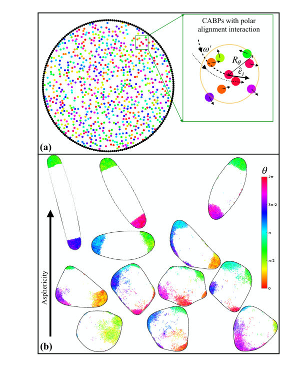
<figcaption class="paper-figure-caption"><b>Fig 1.</b> FIG. 1. (a) Schematic illustration of the model system. The vesicle is composed of passive particles represented by black circles, while active particles are depicted as colored circles. Inset shows a magnified view of the selected region, highlight- ing the detailed structure of the model comprising CABPs with polar alignment interactions. The i-th particle, char- acterized by self-propulsion direction ei and intrinsic angu- lar velocity ω′, experiences polar alignment interactions with neighboring particles within a circular interaction zone of ra- dius Rθ. (b) Simulation snapshots showing diverse shapes adopted by the vesicle during migration, including rod-like, elliptical, and...</figcaption>
</figure>
<figure class="paper-figure-card">
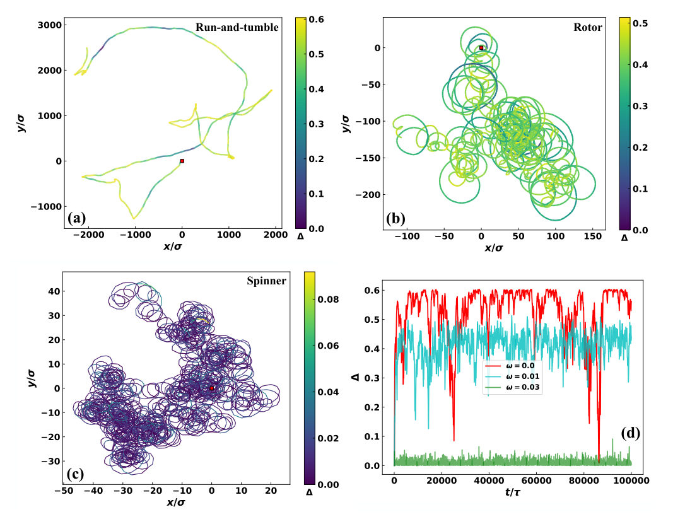
<figcaption class="paper-figure-caption"><b>Fig 2.</b> FIG. 2. Typical trajectories explored by the vesicle, illustrating three modes of cell migration at different chirality strengths for Pe = 30: (a) ω = 0, (b) ω = 0.01, and (c) ω = 0.03. The color-coded bars indicate the corresponding values of the asphericity, ∆= (λ1 −λ2)2/(λ1 + λ2)2 where λ1 and λ2 are eigenvalues of the gyration tensor of the vesicle. The red squares mark the initial positions of the vesicle. (d) Time-series profiles of ∆for the trajectories shown in (a–c).</figcaption>
</figure>
<figure class="paper-figure-card">
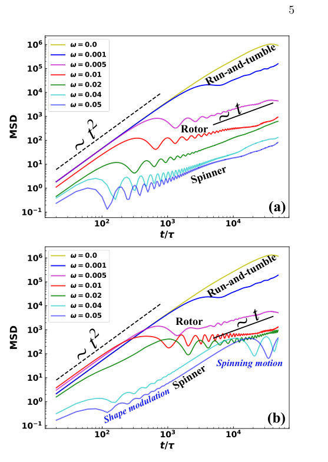
<figcaption class="paper-figure-caption"><b>Fig 3.</b> FIG. 3. Time evolution of the MSD at different chirality strengths ω for Pe = 30: (a) MSD of the vesicle center of mass and (b) average MSD of the membrane beads.</figcaption>
</figure>
<figure class="paper-figure-card">
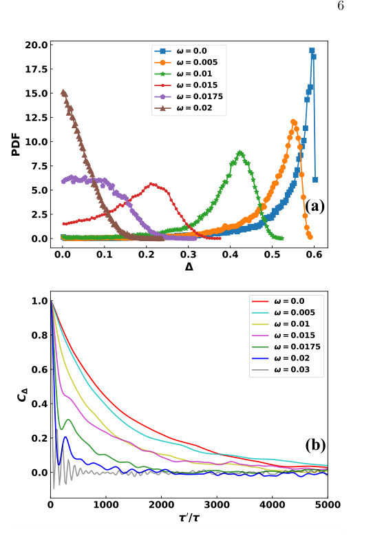
<figcaption class="paper-figure-caption"><b>Fig 4.</b> FIG. 4. (a) Probability distribution function of ∆for various values of ω and (b) auto correlation function of ∆as a function of lag time τ ′ for Pe = 30.</figcaption>
</figure>
<figure class="paper-figure-card">
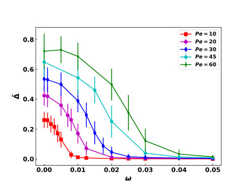
<figcaption class="paper-figure-caption"><b>Fig 5.</b> FIG. 5. Average asphericity as a function of chirality strength for several values of the P´eclet number. The bars denote the standard deviation associated with the spread of the proba- bility distribution function of ∆.</figcaption>
</figure>
</div>

<p><strong>Summary.</strong> This work analyzes how chiral active particles drive the motion and shape changes of enclosed deformable vesicles. Using simulations and analytical theory, the authors show that chirality dictates the rotational dynamics, predicting an optimal chirality that maximizes rotation. This provides a general framework for understanding active stress transmission in confined, non-equilibrium systems.</p>
<p><strong>Why it may be interesting.</strong> The concepts of active stresses, non-equilibrium dynamics, and collective alignment are central to modern statistical mechanics, providing a concrete, solvable model for active matter physics.</p>
<details>
<summary>Detailed structure</summary>
<p><strong>Main problem.</strong> Investigating the transport and shape dynamics of deformable vesicles driven by chiral active Brownian particles (CABPs).</p>
<p><strong>Main result.</strong> Vesicle rotation is non-monotonic with chirality, and the study establishes a general mechanism by which chirality and collective alignment regulate active stress transmission to deformable boundaries.</p>
<p><strong>Method.</strong> The study combines numerical simulations (Langevin dynamics) with the development of an analytical theory relating vesicle rotation to the effective torque generated by the active particles.</p>
<p><strong>Model / system.</strong> The system consists of a 2D, fixed-area vesicle filled with CABPs interacting via excluded volume and polar alignment. The vesicle is modeled as a bead-spring polymer ring, and particle dynamics are governed by Langevin equations.</p>
<p><strong>Key observables.</strong> Mean-square displacement (MSD), asphericity ($\Delta$), and vesicle rotational velocity ($\Omega$).</p>
<p><strong>Important parameters / regimes.</strong> Péclet number ($Pe$), dimensionless alignment strength ($g$), and chirality parameter ($\omega$).</p>
<p><strong>Assumptions / limitations.</strong> The model assumes fixed area conservation for the vesicle and focuses on 2D systems.</p>
<p><strong>Figures summary.</strong> Figures illustrate schematic models, simulation snapshots showing diverse vesicle shapes (rod-like, elliptical), and time-series profiles of observables like asphericity and MSD for different chiral regimes.</p>
<p><strong>Paper structure.</strong> The paper progresses from defining the physical model and simulation setup to presenting simulation results characterizing distinct collective motion modes (Run-and-Tumble, Rotor, Spinner). It culminates in developing an analytical theory that predicts the non-monotonic dependence of rotation on chirality and deriving scaling laws.</p>
</details>
<details>
<summary>Abstract</summary>
<p>Active matter systems can generate mechanical stresses that deform their surroundings, providing a route to transport and shape dynamics far from equilibrium. Deformable vesicles containing active particles offer a minimal setting in which such active stresses are directly coupled to boundary mechanics. Here, we use numerical simulations to investigate a two-dimensional, fixed-area vesicle filled with chiral active particles interacting through excluded volume and polar alignment. We find that the coupling between particle chirality and vesicle deformation produces distinct modes of collective motion, including run-and-tumble-like migration, rotor-like dynamics, and persistent spinning. Most notably, we show that vesicle rotation is non-monotonic in chirality: at fixed activity, an optimal chirality maximizes the rotational velocity. We develop an analytical theory that relates the vesicle rotation to the effective torque generated by the chiral active particles. The theory identifies the competition underlying the optimal chirality and predicts a scale-invariant dependence of the rotational velocity on activity and chirality. This scaling collapses simulation results obtained over different activity strengths onto a universal curve. Our results establish a general mechanism by which chirality and collective alignment regulate the transmission of active stresses to deformable boundaries, providing a framework for understanding transport and rotational dynamics in confined active systems.</p>
</details>
<p><sub><a href="#top">↑ back to top</a></sub></p>

<p><a id="paper-2609.17991"></a></p>
<h3 id="fourier-analysis-of-parametrized-interactive-quantum-classifiers"><a href="http://arxiv.org/abs/2609.17991v1">Fourier Analysis of Parametrized Interactive Quantum Classifiers</a></h3>
<p><strong>Authors:</strong> Fábio Novaes, Fernando M. de Paula Neto, João V. M. Cardoso<br>
<strong>Type:</strong> both · <strong>Category:</strong> quantum information and computing · <strong>PDF:</strong> <a href="https://arxiv.org/pdf/2609.17991v1">https://arxiv.org/pdf/2609.17991v1</a><br>
<strong>Analysis basis:</strong> full PDF text, analyzed in chunks
<strong>Topic relevance:</strong> <code>analog quantum simulation</code> <strong>1/5</strong> · <code>correlated / nonlocal dissipation</code> <strong>1/5</strong> · <code>driven-dissipative phase transition</code> <strong>1/5</strong> · <code>quantum measurements</code> <strong>1/5</strong></p>
<div class="figure-strip-hint">↔ Scroll figures horizontally</div>
<div class="paper-figures-scroll">
<figure class="paper-figure-card">
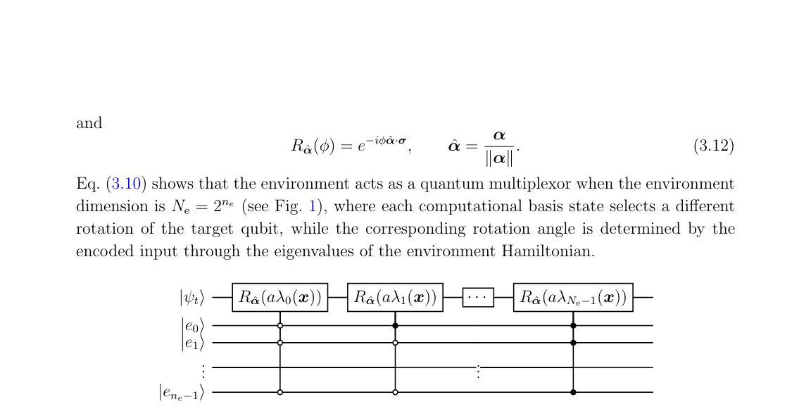
<figcaption class="paper-figure-caption"><b>Fig 1.</b> Figure 1: Circuit representation of the IQC architecture. The target qubit is rotated by R ˆα(aλl(x)) depending on the state of the environment register.</figcaption>
</figure>
<figure class="paper-figure-card">
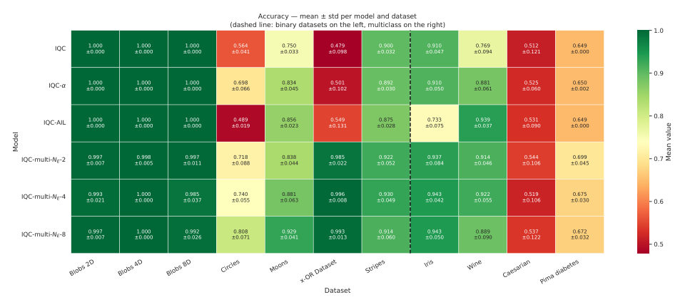
<figcaption class="paper-figure-caption"><b>Fig 2.</b> Figure 2: Accuracy (mean ± standard deviation) obtained by each IQC variant across the eleven benchmark datasets. The dashed vertical line separates binary datasets (left) from multiclass datasets (right).</figcaption>
</figure>
<figure class="paper-figure-card">

<figcaption class="paper-figure-caption"><b>Fig 3.</b> Figure 3: F1-score (mean ± standard deviation) obtained by each IQC variant across the eleven benchmark datasets. The dashed vertical line separates binary datasets (left) from multiclass datasets (right).</figcaption>
</figure>
<figure class="paper-figure-card">

<figcaption class="paper-figure-caption"><b>Fig 4.</b> Figure 4: Decision regions learned by the six IQC variants on the Circles dataset. The plots show the resulting classification regions together with the data points for the two classes.</figcaption>
</figure>
<figure class="paper-figure-card">

<figcaption class="paper-figure-caption"><b>Fig 5.</b> Figure 5: Decision regions learned by the six IQC variants on the Moons dataset. The plots show the resulting classification regions together with the data points for the two classes.</figcaption>
</figure>
</div>

<p><strong>Summary.</strong> This work analytically characterizes Interactive Quantum Classifiers (IQCs) by deriving a closed-form expression for their reduced quantum channel. By applying Fourier analysis, the authors show that the Hamiltonian parameters directly control the frequency components of the classifier's output. This provides a powerful theoretical framework for designing and understanding open-system-inspired quantum machine learning models.</p>
<p><strong>Why it may be interesting.</strong> It directly connects the theoretical framework of open quantum systems (Hamiltonian evolution) to the practical structure of quantum machine learning models, providing an analytical tool (Fourier analysis) to understand model expressivity.</p>
<details>
<summary>Detailed structure</summary>
<p><strong>Main problem.</strong> To provide an analytical characterization of parametrized Hamiltonians in Interactive Quantum Classifiers (IQCs) and establish Fourier analysis as a useful framework for understanding and designing open-system-inspired quantum learning models.</p>
<p><strong>Main result.</strong> The analysis yields a closed-form expression showing how Hamiltonian parameters control the constant, sine, and cosine components of the classifier output, establishing a Fourier interpretation of the feature map.</p>
<p><strong>Method.</strong> The authors derive the reduced quantum channel for a parametrized IQC and employ Fourier analysis to characterize the resulting prediction function.</p>
<p><strong>Model / system.</strong> The model is the Interactive Quantum Classifier (IQC), a quantum machine learning model inspired by open quantum systems where the interaction is governed by a parametrized Hamiltonian.</p>
<p><strong>Key observables.</strong> Classification performance (Accuracy, F1-score), Fourier components (constant, sine, cosine), and the reduced quantum channel.</p>
<p><strong>Important parameters / regimes.</strong> Hamiltonian parameters ($\alpha$), environmental coupling strengths ($W$), and the number of environmental modes ($N_e$).</p>
<p><strong>Assumptions / limitations.</strong> The analysis assumes the IQC dynamics can be reduced to a form amenable to Fourier decomposition, and numerical tests compare various parameterized variants.</p>
<p><strong>Figures summary.</strong> The notes indicate the presence of multiple tables (Tables 6-13) comparing the performance metrics (Accuracy, F1-score, etc.) of various IQC models across several real-world and synthetic datasets.</p>
<p><strong>Paper structure.</strong> The paper moves from theoretical derivation (closed-form expression, Fourier interpretation) to proposing generalized Hamiltonian encodings, followed by extensive numerical experiments comparing model performance across multiple benchmarks.</p>
</details>
<details>
<summary>Abstract</summary>
<p>Interactive Quantum Classifiers (IQCs) constitute a family of quantum machine learning models inspired by open quantum systems, in which the interaction between a target qubit and an environment is described by a Hamiltonian. Previous works introduced alternative Hamiltonian parameterizations and showed empirically that they can improve classification performance, but the role of these parameters in the resulting classifier remains poorly understood. In this work, we derive a closed-form expression for the reduced quantum channel generated by a parametrized IQC with a single target qubit. The analytical solution explicitly reveals how the Hamiltonian parameters control the constant, sine, and cosine components of the classifier output, establishing a Fourier interpretation of the induced feature map. This analysis motivates a generalized family of Hamiltonian encodings, including matrix-parameterized environmental Hamiltonians whose Fourier components depend on linear combinations of input features, thereby enabling non-separable Fourier structures. Numerical experiments on synthetic and real-world datasets show that the proposed models can improve classification performance on several nonlinear benchmarks. The generalized matrix encoding achieves the strongest aggregate performance in the evaluated benchmark, while a simpler four-parameter extension often attains comparable performance with substantially fewer trainable parameters. We additionally characterize the generated state ensembles using the standard fidelity-based expressibility measure, finding that global expressibility does not directly predict classification performance. Our results provide an analytical characterization of parametrized Hamiltonians in Interactive Quantum Classifiers and establish Fourier analysis as a useful framework for understanding and designing open-system-inspired quantum learning models.</p>
</details>
<p><sub><a href="#top">↑ back to top</a></sub></p>

<p><a id="paper-2609.18002"></a></p>
<h3 id="algorithmic-design-of-heralded-linear-optical-circuits-for-multipartite-entanglement"><a href="http://arxiv.org/abs/2609.18002v1">Algorithmic Design of Heralded Linear Optical Circuits for Multipartite Entanglement</a></h3>
<p><strong>Authors:</strong> Jaehee Kim, Hon Wai Lau, William J. Munro, Joonsuk Huh, Seungbeom Chin<br>
<strong>Type:</strong> theory · <strong>Category:</strong> quantum information and computing · <strong>PDF:</strong> <a href="https://arxiv.org/pdf/2609.18002v1">https://arxiv.org/pdf/2609.18002v1</a><br>
<strong>Analysis basis:</strong> full PDF text, analyzed in chunks
<strong>Topic relevance:</strong> <code>interference shaping light</code> <strong>1/5</strong> · <code>quantum measurements</code> <strong>1/5</strong></p>
<div class="figure-strip-hint">↔ Scroll figures horizontally</div>
<div class="paper-figures-scroll">
<figure class="paper-figure-card">

<figcaption class="paper-figure-caption"><b>Fig 1.</b> FIG. 1. Summary of our algorithmic strategy. EPM graph repositories are constructed for different (N, M) in Stage 1. Target states are selected and searched within the graph repositories in Stage 2. The searched graphs are translated into heralded linear optical circuits using the LQG translation rules in Stage 3.</figcaption>
</figure>
<figure class="paper-figure-card">

<figcaption class="paper-figure-caption"><b>Fig 2.</b> FIG. 2. Number of distinct spectral-signature groups versus the number of ancilla nodes M (from 2 to 4), for system sizes N (from 3 to 6) (see Table I, ‘spectra groups’ column).</figcaption>
</figure>
<figure class="paper-figure-card">

<figcaption class="paper-figure-caption"><b>Fig 3.</b> FIG. 3. EPM graph solutions for hypergraph magic states: (a) H0CCZ012| + ++⟩for N = 3, using 8 photons; and two solutions, (b) and (c), for H0CCCZ0123| + + + +⟩for N = 4, each using 11 photons.</figcaption>
</figure>
<figure class="paper-figure-card">

<figcaption class="paper-figure-caption"><b>Fig 4.</b> FIG. 4. Linear optical circuit for generating N = 3 hypergraph magic state, which is directly constructed through the translation rules from graphs to circuits.</figcaption>
</figure>
<figure class="paper-figure-card">

<figcaption class="paper-figure-caption"><b>Fig 5.</b> FIG. 5. (a), (b) Graph solutions for generating the [[2k, 1, 2]] loss-tolerant error correcting codes for k = 2, 3, (c) an arbitrary [[2k, 1, 2]] loss-tolerant error correcting code with N = 2k, inferred from the patterns of the numerically generated graphs in (a) and (b). Only the free-parameter edges are labeled, with ˜α ≡α/ √</figcaption>
</figure>
</div>

<p><strong>Summary.</strong> This paper introduces an algorithmic framework to automate the design of heralded linear optical circuits for creating complex multipartite entangled states. By mapping the problem onto a graph-search problem within the Linear Quantum Graph picture, the authors systematically discover efficient circuit blueprints. This methodology significantly advances the feasibility of engineering advanced quantum resources for quantum information tasks.</p>
<p><strong>Why it may be interesting.</strong> This work provides a powerful computational tool for quantum optics, moving the design of complex entangled states from ad-hoc engineering to a systematic, automated discovery process, which is highly relevant for building quantum processors.</p>
<details>
<summary>Detailed structure</summary>
<p><strong>Main problem.</strong> The paper addresses the algorithmic challenge of designing linear optical circuits required to generate specific, complex multipartite entangled quantum states.</p>
<p><strong>Main result.</strong> They establish a systematic, algorithmic framework using the Linear Quantum Graph (LQG) picture to automatically discover and design efficient circuits for various resource states, including hypergraph magic states and quantum error correcting codes.</p>
<p><strong>Method.</strong> The core method reformulates circuit design as a three-stage graph-search problem: enumerating Effective Perfect Matching (EPM) graphs, searching this repository for graphs matching the target state's spectral signature, and finally translating the successful graph into a physical circuit.</p>
<p><strong>Model / system.</strong> The physical platform is linear optical circuits utilizing beam splitters and ancillary measurements (heralded generation). The theoretical model is the Linear Quantum Graph (LQG) picture, which structures the search space using EPM graphs defined by system, ancilla, and photon-subtraction nodes.</p>
<p><strong>Key observables.</strong> Success probability ($P_{succ}$), the generated quantum state (e.g., GHZ, W, hypergraph magic states), and the structure of the EPM graph.</p>
<p><strong>Important parameters / regimes.</strong> The number of qubits ($N$), the number of ancilla nodes ($M$), and the specific parameters defining the target state (e.g., $\alpha, eta$ for error-correcting codes).</p>
<p><strong>Assumptions / limitations.</strong> The initial framework assumes unweighted graphs (equal amplitudes) and relies on spectral signatures as a necessary, though not sufficient, condition for local unitary (LU) equivalence.</p>
<p><strong>Figures summary.</strong> Figures illustrate the three-stage algorithmic strategy, show specific circuit realizations for states like the N=3 hypergraph magic state and the N=4 cluster state, and compare different circuit designs for the same target state.</p>
<p><strong>Paper structure.</strong> The paper follows a structured algorithmic approach: first, enumerating candidate circuit structures via EPM graphs; second, searching this repository by comparing spectral signatures to the target state; and third, translating the successful graph structure into a physical, optimized linear optical circuit.</p>
</details>
<details>
<summary>Abstract</summary>
<p>Heralded multipartite entanglement is a key resource for various quantum information tasks. However, designing linear optical circuits that generate specific target states is generally challenging due to the complexity of the required optical structures. Here we formulate the design of heralded photonic circuits as an algorithmic graph-search problem. Our framework enables the automated construction and optimization of heralded photonic circuits by substantially reducing the search space using the linear quantum graph (LQG) picture. Our strategy reconstructs circuit structures as graphs in the picture and identifies suitable graphs automatically. As a result, we design efficient schemes for a broad range of useful multipartite resource states, including hypergraph magic states, quantum error correcting codes, general three-qubit states and length-1 caterpillar graph states. Our work establishes an algorithmic framework for the systematic discovery of heralded resource states, laying the foundation for the automated design of increasingly complex multipartite entangled resources.</p>
</details>
<p><sub><a href="#top">↑ back to top</a></sub></p>

<p><a id="paper-2609.17872"></a></p>
<h3 id="assessing-the-reliability-of-anomalous-hall-conductivity-extraction-in-gdalsi"><a href="http://arxiv.org/abs/2609.17872v1">Assessing the Reliability of Anomalous Hall Conductivity Extraction in GdAlSi</a></h3>
<p><strong>Authors:</strong> Anil Kumar, Debapratim Pal, Sudhan Koirala, Muhammad Adnan, Youngsang, Ji, Prakash Regmi, Bailey S. Bouley, Ludi Miao, Yun Suk Eo<br>
<strong>Type:</strong> both · <strong>Category:</strong> strongly correlated electrons · <strong>PDF:</strong> <a href="https://arxiv.org/pdf/2609.17872v1">https://arxiv.org/pdf/2609.17872v1</a><br>
<strong>Analysis basis:</strong> full PDF text, analyzed in chunks
<strong>Topic relevance:</strong> <code>Keldysh / 2PI / non-Gaussian methods</code> <strong>1/5</strong> · <code>quantum measurements</code> <strong>1/5</strong></p>
<div class="figure-strip-hint">↔ Scroll figures horizontally</div>
<div class="paper-figures-scroll">
<figure class="paper-figure-card">

<figcaption class="paper-figure-caption"><b>Fig 1.</b> FIG. 1. Finite-element simulation of magnetotransport (single-channel Drude model). (a) Normalized longitudinal resistance (RL(B)/RL(0)) for different length-to-width ratios, together with the ideal cases (RL ∝1/σxx) and (RL ∝ρxx). (b) Normalized transverse resistance (measured at the center of the sample) for different length-to-width ratios, together with the ideal case (RT = ρyx/t) (Used ρxx(0) = 30 µΩ· cm and µ = 200 cm2/V · s for the simulations). Inset: A typ- ical longitudinal and transverse resistance configuration for experiments (electrodes enumerated).</figcaption>
</figure>
<figure class="paper-figure-card">

<figcaption class="paper-figure-caption"><b>Fig 2.</b> FIG. 2. Anomalous Hall conductivity extraction in a SrRuO3 thin film at 1.8 K. (a) Antisymmetrized transverse resistivity, ρyx, with a high-field linear fit used to estimate the ordinary Hall background (shown in blue dotted lines labeled HF linear fit). (b) Total transverse conductivity, σyx, with a high-field linear fit (shown in orange dotted lines labeled HF linear fit) used to estimate the ordinary Hall contribution directly in conductivity space. (c) Extracted anomalous Hall conduc- tivity, σAHE yx , obtained from the resistivity-based procedure (blue, labeled HF-sub. ρyx) and the conductivity-based pro- cedure (orange, labeled HF-sub. σyx).</figcaption>
</figure>
<figure class="paper-figure-card">

<figcaption class="paper-figure-caption"><b>Fig 3.</b> FIG. 4. Effect of the field-dependent longitudinal resistivity on the extracted Hall conductivity. (a) Measured longitudinal resistivity, ρM L , of GdAlSi at 2 K for H ∥c. (b) Comparison of the total Hall conductivity obtained by direct inversion by assuming the measured longitudinal resistivity ρL is ρxx (in blue) and that assuming only the zero field ρL is maintained along the entire range (in red). This uncertainty in ρxx con- tributes to the discrepancy in the extracted anomalous Hall conductivity.</figcaption>
</figure>
<figure class="paper-figure-card">

<figcaption class="paper-figure-caption"><b>Fig 4.</b> FIG. 3. Extraction of the anomalous Hall effect using high- field linear extrapolation. (a) Measured Hall resistivity, (ρM yx), at 2 K for (H ∥c). The red dashed line (labeled HF linear fit) denotes the linear fit to the high-field region extrapolated to lower fields. (b) The total Hall conductivity, (σtot yx ), calcu- lated from the measured resistances. The green dashed line (labeled HF linear fit) denotes the corresponding high-field linear extrapolation. (c) Estimated anomalous Hall conduc- tivity obtained using two subtraction procedures: 1) HF-sub. ρyx (in red): subtraction of the high-field linear background from ρyx prior to conversion to conductivity. 2) HF-sub. σyx (in green):...</figcaption>
</figure>
<figure class="paper-figure-card">

<figcaption class="paper-figure-caption"><b>Fig 5.</b> FIG. 5. Comparison of anomalous Hall conductivity extracted using two high-field analysis methods. The red curve (HF- sub. (ρyx)) is obtained by subtracting a high-field linear back- ground from (ρyx) prior to conversion to conductivity. The violet curve is obtained by solving for σAHE yx from Eq. (22), after σO xx has been modeled from the Hall mobility. The error bars show the variation in the extracted (σAHE yx ) when the Hall mobility is varied by 1.5%.</figcaption>
</figure>
</div>

<p><strong>Summary.</strong> This work critically examines the methods used to extract the anomalous Hall conductivity ($\sigma_{AHE}$) from magnetotransport data in quantum materials. By comparing results from $   ext{SrRuO}_3$ and $ ext{GdAlSi}$, the authors demonstrate that the extraction is highly unreliable if the ordinary Hall background subtraction or the longitudinal transport interpretation is ambiguous. The paper serves as a practical caution regarding the quantitative interpretation of excess Hall effects.</p>
<p><strong>Why it may be interesting.</strong> While focused on condensed matter transport, the rigorous mathematical and physical caution regarding model dependence and ambiguity in extracting fundamental quantities (like Berry curvature related terms) is relevant to any field relying on complex measurements or theoretical modeling.</p>
<details>
<summary>Detailed structure</summary>
<p><strong>Main problem.</strong> The paper assesses the reliability and ambiguity in extracting the anomalous Hall conductivity ($\sigma_{AHE}$) from magnetotransport measurements, particularly when the ordinary Hall background subtraction is non-trivial.</p>
<p><strong>Main result.</strong> The extraction of $\sigma_{AHE}$ is highly sensitive to the analysis procedure, especially in materials like GdAlSi where the transverse response lacks clear saturation. Different interpretations of the ordinary Hall background can yield vastly different estimates for $\sigma_{AHE}$.</p>
<p><strong>Method.</strong> The authors compare multiple theoretical and experimental analysis methods, including low-field vs. high-field fitting, and the conversion between resistivity and conductivity tensors, using the Drude model framework.</p>
<p><strong>Model / system.</strong> The study analyzes magnetotransport measurements in quantum materials, comparing the well-behaved $ ext{SrRuO}_3$ with the more ambiguous $ ext{GdAlSi}$. The analysis relies on extending the single-channel Drude model to account for anomalous and ordinary Hall contributions.</p>
<p><strong>Key observables.</strong> Anomalous Hall conductivity ($\sigma_{AHE}$), Ordinary Hall conductivity ($\sigma_O$), longitudinal resistance ($
ho_L$), and transverse resistance ($
ho_T$) as functions of magnetic field ($B$).</p>
<p><strong>Important parameters / regimes.</strong> Magnetic field ($B$), carrier density ($n$), and carrier mobility ($\mu$).</p>
<p><strong>Assumptions / limitations.</strong> The analysis critically tests assumptions such as the equivalence of OHE subtraction in resistivity vs. conductivity, and the validity of extrapolating low-field linear fits to high fields.</p>
<p><strong>Figures summary.</strong> Figures compare $\sigma_{AHE}$ extracted using various low-field analysis methods for GdAlSi, and show finite-element simulations of magnetotransport using the single-channel Drude model.</p>
<p><strong>Paper structure.</strong> The paper first establishes the theoretical framework using the Drude model for magnetotransport. It then uses $   ext{SrRuO}_3$ as a benchmark to validate extraction techniques. Finally, it applies these techniques to $   ext{GdAlSi}$, systematically comparing multiple low-field and high-field analysis procedures to expose the sources of ambiguity.</p>
</details>
<details>
<summary>Abstract</summary>
<p>We examine the different methods of extracting the anomalous Hall conductivity using SrRuO$_3$ and GdAlSi. For SrRuO$_3$, where the ordinary Hall background is well defined and the magnetoconductance is small, subtracting the ordinary Hall contribution either before or after conversion from resistivity to conductivity yields nearly identical anomalous Hall conductivities. In GdAlSi, in contrast, the transverse response does not exhibit clear saturation, and both low- and high-field regions can appear approximately linear. We show that different interpretations of these linear regions as the ordinary Hall background, together with the treatment of the measured longitudinal resistance in the resistivity-to-conductivity conversion, can produce completely different estimates of the anomalous Hall conductivity. We also examine whether the nonlinear Hall response can instead be described within an ordinary Hall framework without invoking an anomalous contribution. Our analysis provides practical cautions for extracting excess Hall contributions in quantum materials.</p>
</details>
<p><sub><a href="#top">↑ back to top</a></sub></p>

<p><a id="paper-2609.18791"></a></p>
<h3 id="carrollian-axion-electrodynamics"><a href="http://arxiv.org/abs/2609.18791v1">Carrollian axion electrodynamics</a></h3>
<p><strong>Authors:</strong> Hemant Rathi, Ashish Shukla<br>
<strong>Type:</strong> theory · <strong>Category:</strong> other · <strong>PDF:</strong> <a href="https://arxiv.org/pdf/2609.18791v1">https://arxiv.org/pdf/2609.18791v1</a><br>
<strong>Analysis basis:</strong> full PDF text, analyzed in chunks
<strong>Topic relevance:</strong> <code>Keldysh / 2PI / non-Gaussian methods</code> <strong>1/5</strong> · <code>analog quantum simulation</code> <strong>1/5</strong></p>
<div class="figure-strip-hint">↔ Scroll figures horizontally</div>
<div class="paper-figures-scroll">
<figure class="paper-figure-card">

<figcaption class="paper-figure-caption"><b>Fig 1.</b> Figure 1: A spherically symmetric interface between regions with θ = 0 and θ = θ0, with a magnetic monopole of charge qm placed at the origin. The monopole induces a uniform distribution of electric charge on the interface, making the observer in the region θ = θ0 infer it to also carry an electric charge.</figcaption>
</figure>
</div>

<p><strong>Summary.</strong> This work develops the effective field theory describing axion electrodynamics in the low-velocity (Carrollian) limit. It derives two distinct theories, highlighting that the magnetic sector supports a novel monopole-to-dyon conversion effect. The analysis rigorously proves the vanishing of the linear magnetoelectric effect while establishing the complex structure of the resulting phase space.</p>
<p><strong>Why it may be interesting.</strong> The study of effective field theories in extreme limits (like $c 	o 0$) and the resulting topological phenomena (like the Witten effect) provides a framework for understanding low-energy effective theories in condensed matter systems, particularly those involving emergent gauge fields or topological order.</p>
<details>
<summary>Detailed structure</summary>
<p><strong>Main problem.</strong> The paper constructs and analyzes theories of Carrollian electromagnetism coupled to an axion field by performing a low-energy limit expansion ($c 	o 0$) of full axion electrodynamics.</p>
<p><strong>Main result.</strong> The resulting magnetic theory exhibits a Carrollian analogue of the Witten effect, and the linear magnetoelectric effect is shown to vanish entirely through rigorous constraint analysis.</p>
<p><strong>Method.</strong> The primary method involves performing a systematic $c 	o 0$ expansion of the Lagrangian density and subsequently employing Dirac-Bergmann analysis to determine the physical phase space structure.</p>
<p><strong>Model / system.</strong> The system is axion electrodynamics, which is reduced to two types of Carrollian theories (electric and magnetic) in the low-velocity limit. The analysis extends to include couplings to fermions and non-Abelian generalizations.</p>
<p><strong>Key observables.</strong> Carrollian analogue of the Witten effect (monopole acquiring electric charge), vanishing linear magnetoelectric effect, and non-vanishing Dirac brackets among canonical variables.</p>
<p><strong>Important parameters / regimes.</strong> The speed of light ($c$), the axion mass ($m$), and the coupling constant ($\alpha$) are central parameters defining the limits and couplings.</p>
<p><strong>Assumptions / limitations.</strong> The analysis relies fundamentally on the $c 	o 0$ expansion methodology, and the initial Lagrangian is assumed to be the standard axion electrodynamics form.</p>
<p><strong>Paper structure.</strong> The paper progresses from deriving the general $c 	o 0$ expansion for the Lagrangian, separating it into electric and magnetic theories, establishing key physical consequences like the Witten effect, and concluding with detailed analyses of the phase space structure using Dirac brackets.</p>
</details>
<details>
<summary>Abstract</summary>
<p>We construct theories of Carrollian electromagnetism coupled to an axion field. Obtained by performing a $c \to 0$ expansion of axion electrodynamics, these are of two types: electric and magnetic. We derive the Lagrangians and work out the general classical solutions for both. While the electric theory has the axion effectively decoupled from the electromagnetic fields, the magnetic theory is endowed with a nontrivial axion coupling that leads to interesting phenomenology. In particular, a Carrollian analogue of the Witten effect, wherein a magnetic monopole in the presence of a constant non-vanishing axion acquires an electric charge and becomes a dyon, is present in the magnetic theory. At the same time, the linear magnetoelectric effect vanishes entirely, a conclusion we establish by performing a thorough Dirac-Bergmann analysis of the constraint structure of the magnetic theory and a proper identification of its physical phase space.</p>
</details>
<p><sub><a href="#top">↑ back to top</a></sub></p>

<p><a id="paper-2609.18918"></a></p>
<h3 id="graph-lattice-sums-and-graph-zeta-functions-for-long-range-interacting-quantum-lattice-models"><a href="http://arxiv.org/abs/2609.18918v1">Graph lattice sums and graph zeta functions for long-range interacting quantum lattice models</a></h3>
<p><strong>Authors:</strong> Andreas Alexander Buchheit, Andreas Rupp<br>
<strong>Type:</strong> theory · <strong>Category:</strong> strongly correlated electrons · <strong>PDF:</strong> <a href="https://arxiv.org/pdf/2609.18918v1">https://arxiv.org/pdf/2609.18918v1</a><br>
<strong>Analysis basis:</strong> full PDF text, analyzed in chunks
<strong>Topic relevance:</strong> <code>analog quantum simulation</code> <strong>1/5</strong> · <code>methods for driven-dissipative</code> <strong>1/5</strong></p>
<div class="figure-strip-hint">↔ Scroll figures horizontally</div>
<div class="paper-figures-scroll">
<figure class="paper-figure-card">

<figcaption class="paper-figure-caption"><b>Fig 1.</b> Figure 1. Low-order corpora of the long-range transverse-field Ising model on an arbitrary d-dimensional lattice Λ, obtained via the pCUT method, where all edges e ∈E are associated with an identical kernel Ke ∈ℓ1(Λ). Panel (a) depicts the corpus for the ground state energy density e0(λ) (no terminals) up to expansion order 7 (up to 6d-dimensional lattice sums), including the graphs G and their prefactors ar(G) ∈Q. Panel (b) depicts the corpus for the single quasiparticle dispersion relation ω(k, λ) (1qp) up to expansion order 5 with terminals colored in orange. In this work, we use state-of-the-art expansions of order 13 for 0qp (8 403 graphs, max. dimension (r −1)d) and order 11 for 1qp...</figcaption>
</figure>
<figure class="paper-figure-card">

<figcaption class="paper-figure-caption"><b>Fig 2.</b> Figure 2. Relative error of the zeta algebra for a cycle with |V | = 4, 8, 12 nodes, neighboring terminals, and power-law edge kernels Kν with equal exponents ν = d+σ at k = 0, compared with the analytic benchmark value at k = 0. The dashed lines display the value for σmax = 0, where only a truncated Fourier series is used. Panel (a) shows the integer lattice Λ, while (b) displays the results for the trigonal lattice with n = 64 points per dimension, respectively. The dashed line displays the conservatively chosen cutoff value in σ, after which σmax = 0 is applied.</figcaption>
</figure>
<figure class="paper-figure-card">

<figcaption class="paper-figure-caption"><b>Fig 3.</b> Figure 3. (a) Graph obtained from a single bridge by applying the operation T, consisting of a multiplication followed by a convolution, four times. (b) Maximum relative error of the associated graph zeta function ζG(k) for Λ = Z on the grid k ∈BZ64 for σ = 1/2 (black) and σ = 1 (red). Open points correspond to the zeta algebra with n = 64 while solid points correspond to the finer discretization n = 1024. The reference is the Richardson-extrapolated truncated sum over the box [−L, L] with L = 10 000, 12 000, . . . , 22 000, evaluated using bucket elimination at the 64 momentum points. The error increases only linearly with the number of operations.</figcaption>
</figure>
<figure class="paper-figure-card">

<figcaption class="paper-figure-caption"><b>Fig 4.</b> Figure 4. Runtime in milliseconds for evaluating graph zeta func- tions ζG on a complete nd momentum grid for n = 64 and σ = 1/2 on a single core Apple M1 Max core. Panel (a) shows the run- time for a cycle with neighboring terminals as a function of the number of nodes |V |, while panel (b) shows the runtime for the graph obtained from repeated applications of T, as a function of the operation count. The black dots show Λ = Z, while the red squares display the results for the trigonal lattice. The runtime increases only linearly, compared to exponential increase for direct summation.</figcaption>
</figure>
<figure class="paper-figure-card">

<figcaption class="paper-figure-caption"><b>Fig 5.</b> Figure 5. Relative error of the graph zeta function with edge exponent ν = d + σ at k = 0 obtained from the zeta algebra for Λ = Z as a function of the number of discretization points n for (a) the cycle graph with |V | = 8 nodes and (b) the graph obtained by applying T 4 to a bridge. The black dots show σ = 0.5, while the red dots display σ = 1. The function is evaluated at n = ⌊48 · 2j/2⌉ with ⌊·⌉the nearest integer and j = 0, 1, . . . , 12. The dashed lines show a linear fit against the logarithmized data, with resulting fit exponents shown as captions to the triangle. The scaling is in good agreement with the theoretical bound |n|−(d+σ+2) from Remark 6.7.</figcaption>
</figure>
</div>

<p><strong>Summary.</strong> This paper presents a novel, highly efficient computational method for evaluating complex graph lattice sums that arise in the perturbative analysis of quantum lattice models with long-range interactions. By leveraging graph theory and advanced mathematical tools like generalized zeta functions, the authors drastically reduce computation time from infeasible to minutes. This breakthrough allows for precise theoretical study of exotic quantum materials and their spectral properties.</p>
<p><strong>Why it may be interesting.</strong> The ability to calculate high-order series expansions for long-range interacting systems with unprecedented speed is a major theoretical breakthrough, providing access to regimes previously limited by computational complexity.</p>
<details>
<summary>Detailed structure</summary>
<p><strong>Main problem.</strong> The primary challenge is taming the exponential growth of the Hilbert space dimension when simulating gapped quantum lattice models, particularly those featuring long-range (nonlocal) interactions.</p>
<p><strong>Main result.</strong> The authors developed a novel method to compute required graph lattice sums, reducing computation time from thousands of core-hours to minutes, and achieving full agreement with Monte Carlo simulations for the transverse-field Ising model.</p>
<p><strong>Method.</strong> The method involves factorizing high-dimensional lattice sums over graph blocks and evaluating them using specialized techniques based on the block's treewidth, including analytic forms via generalized zeta functions and tensor-network elimination.</p>
<p><strong>Model / system.</strong> The work applies to general long-range interacting quantum lattice models, exemplified by the transverse-field Ising model on various lattices (1D, 2D, 3D). The theory relies on high-order linked-cluster expansions.</p>
<p><strong>Key observables.</strong> Low-lying spectrum, dispersion relations $\omega(\mathbf{k}, \lambda)$, and the dependence of these on the perturbation parameter $\lambda$.</p>
<p><strong>Important parameters / regimes.</strong> The interaction range (power-law decay), the lattice dimension ($d$), and the treewidth ($\mathrm{tw}$) of the underlying graph structure.</p>
<p><strong>Assumptions / limitations.</strong> The method assumes that physically relevant correlation functions retain translational invariance, which is crucial for defining the graph zeta functions.</p>
<p><strong>Figures summary.</strong> Figures illustrate the computed dispersion relation $\omega(\mathbf{k}, \lambda)$ for the 3D LRTFIM, showing high-symmetry points and cuts along high-symmetry paths, confirming the method's ability to resolve the full momentum grid.</p>
<p><strong>Paper structure.</strong> The paper introduces the problem of lattice sums, develops the mathematical framework using graph zeta functions, details the computational strategy based on treewidth factorization, and validates the method by reproducing Monte Carlo results for various lattice dimensions.</p>
</details>
<details>
<summary>Abstract</summary>
<p>Taming the exponential increase of the Hilbert space dimension with system size in the simulation of gapped quantum lattice models is of the highest relevance for understanding and designing exotic quantum materials, where nonlocal interactions are of particular interest. High-order linked-cluster expansions provide access the solution of the eigenvalue problem for the infinite system, yet rely on the computation of high-dimensional oscillatory lattice sums with a graph structure, only approachable with Monte Carlo methods so far. This work resolves this issue, rendering all required graph lattice sums, referred to as graph zeta functions for kernels involving power-laws, computable. The resulting method reduces the evaluation time for state-of-the art series expansions from tenthousands of core-hours to minutes. After factorizing the lattice sum over blocks, each block is evaluated by the cheapest available strategy depending on its treewidth $\mathrm{tw}$. Basic blocks admit analytic forms in terms of generalized zeta functions. Series-parallel blocks with $\mathrm{tw}\le 2$ can be computed at linear cost in the number of graph nodes and in the size of the momentum grid using a semi-analytical algebra based on Epstein zeta functions and rapidly decaying Fourier series. Finally, for $\mathrm{tw}>2$, the method is combined with tensor-network bucket elimination yielding polynomial scaling of numerical work and memory in momentum grid size with exponents only growing with $\mathrm{tw}$ rather than with the number of vertices. Through use of FFT, the full momentum grid is recovered at the cost of a single momentum evaluation. We provide a detailed analysis of the precision and runtime of our method against analytic and numerical benchmarks. We further reproduce published Monte Carlo data for the transverse-field Ising model on different 1D, 2D, and 3D lattices, obtaining full agreement.</p>
</details>
<p><sub><a href="#top">↑ back to top</a></sub></p>

<p><a id="paper-2609.18666"></a></p>
<h3 id="impact-of-a-css-quantum-error-correction-code-in-underwater-quantum-key-distribution"><a href="http://arxiv.org/abs/2609.18666v1">Impact of a CSS quantum error correction code in underwater quantum key distribution</a></h3>
<p><strong>Authors:</strong> Juliette Florin, Nicolas Le Josse, Arnaud Coatanhay, Gilles Burel<br>
<strong>Type:</strong> theory · <strong>Category:</strong> quantum information and computing · <strong>PDF:</strong> <a href="https://arxiv.org/pdf/2609.18666v1">https://arxiv.org/pdf/2609.18666v1</a><br>
<strong>Analysis basis:</strong> full PDF text, analyzed in chunks
<strong>Topic relevance:</strong> <code>methods for driven-dissipative</code> <strong>1/5</strong> · <code>quantum measurements</code> <strong>1/5</strong></p>
<div class="figure-strip-hint">↔ Scroll figures horizontally</div>
<div class="paper-figures-scroll">
<figure class="paper-figure-card">

<figcaption class="paper-figure-caption"><b>Fig 1.</b> FIG. 1. Schematic of the proposed quantum communication setup for QKD. The system includes a</figcaption>
</figure>
<figure class="paper-figure-card">

<figcaption class="paper-figure-caption"><b>Fig 2.</b> FIG. 2. Shematic view of the time line of receiving photons over nanosecond-scale slots showing</figcaption>
</figure>
<figure class="paper-figure-card">

<figcaption class="paper-figure-caption"><b>Fig 3.</b> FIG. 3. Schematic of a quantum communication system at the receiver showing the signal process-</figcaption>
</figure>
<figure class="paper-figure-card">

<figcaption class="paper-figure-caption"><b>Fig 4.</b> Fig. 2 demonstrates that both sent photons and noise photons (ambient background,</figcaption>
</figure>
<figure class="paper-figure-card">

<figcaption class="paper-figure-caption"><b>Fig 5.</b> FIG. 4. QBER is plotted against SNR (dB, defined as 10 log10(SNR)) for the BB84 QKD protocol</figcaption>
</figure>
</div>

<p><strong>Summary.</strong> This paper analyzes the feasibility of using Quantum Error Correction Codes (QECC) to secure quantum key distribution in noisy underwater channels. By modeling photon loss and ambient noise, the authors show that while QECC extends the operational range at low SNR, its overhead makes raw BB84 superior when the signal quality is high. The deployment strategy must therefore be highly dependent on the local SNR conditions.</p>
<p><strong>Why it may be interesting.</strong> It provides a concrete, applied study of how quantum error correction techniques must be tailored to the specific noise characteristics of a complex physical channel (underwater optics) to maintain secure communication.</p>
<details>
<summary>Detailed structure</summary>
<p><strong>Main problem.</strong> The paper investigates whether Quantum Error Correction Codes (QECC) can mitigate performance degradation in Quantum Key Distribution (QKD) when transmitting underwater due to photon loss and ambient noise.</p>
<p><strong>Main result.</strong> QECC is beneficial only in marginal Signal-to-Noise Ratio (SNR) regimes, enabling communication in depth ranges otherwise infeasible, but raw BB84 dominates at high SNR due to encoding overhead.</p>
<p><strong>Method.</strong> The authors developed a stochastic channel model incorporating photon loss, geometric spreading, and solar noise, analyzing the Quantum Bit Error Rate (QBER) and Secure Key Rate (SKR) analytically and via Monte Carlo simulations.</p>
<p><strong>Model / system.</strong> The system models vertical underwater quantum communication using the BB84 protocol. The channel is treated as a CPTP map incorporating signal loss, vacuum events, and noise photon arrivals, analyzed using 4-qubit CSS stabilizer codes.</p>
<p><strong>Key observables.</strong> Quantum Bit Error Rate (QBER) and Secure Key Rate (SKR).</p>
<p><strong>Important parameters / regimes.</strong> Signal-to-Noise Ratio (SNR), QBER threshold (11% for security), and the specific type of error correction code used (standard vs. discard).</p>
<p><strong>Assumptions / limitations.</strong> The analysis assumes a homogeneous water medium, negligible scattering noise, and that the dominant error mechanism is photon loss (erasure channel).</p>
<p><strong>Figures summary.</strong> Figures compare QBER and SKR vs. SNR for raw BB84, standard QECC, and discard QECC, demonstrating the performance trade-offs across different SNR regimes.</p>
<p><strong>Paper structure.</strong> The paper establishes the physical model, develops the stochastic channel and performance metrics (QBER, SKR), analyzes the benefits and overhead of QECC, and concludes with scenario-dependent deployment guidelines.</p>
</details>
<details>
<summary>Abstract</summary>
<p>Quantum key distribution (QKD) enables secure underwater communications essential for maritime infrastructure. Underwater optical channels introduce substantial photon loss (erasures) and ambient noise that degrade QKD performance. This paper investigates whether two four-qubit Calderbank-Shor-Steane (CSS) quantum error correction codes (QECC) mitigate these impairments in vertical underwater communication BB84 QKD protocol. After developing a comprehensive stochastic channel model incorporating photon loss, geometric spreading, and solar noise, we assess the viability of QECC through the analytical study of the quantum bit error rate (QBER) and the secure key rate (SKR) with and without security depending on the signal-to-noise ratio (SNR) validated against Monte Carlo simulations. The standard four-qubit CSS code achieves a 3 dB SNR gain at the QBER 11% security threshold; the discard code variant achieves 4.5 dB. However, QECC includes an encoding overhead that reduces the SKR. We demonstrate a crucial relationship between the SKR and the probability of arrival of the sent photon. Analysis shows that QECC is beneficial exclusively in marginal SNR regimes; at high SNR, raw BB84 dominates. For an ocean Type III Jerlov water scenario with sunlight coming from the sun located at the top of the atmosphere, we identify operational depth-range windows where QECC enables communication otherwise infeasible. This analysis establishes that error correction deployment must be scenario-dependent: extend operational range at the cost of throughput when SNR is marginal, or prioritize key generation rates at high SNR.</p>
</details>
<p><sub><a href="#top">↑ back to top</a></sub></p>

<p><a id="paper-2609.18592"></a></p>
<h3 id="optical-investigation-of-the-electronic-structure-of-a-ferromagnetic-weyl-semimetal-cealsi"><a href="http://arxiv.org/abs/2609.18592v1">Optical investigation of the electronic structure of a ferromagnetic Weyl semimetal CeAlSi</a></h3>
<p><strong>Authors:</strong> Shin-ichi Kimura, Yue Pan, Hiroshi Watanabe, Akimitsu Kirikoshi, Junya Otsuki, Hiroshi Tanida<br>
<strong>Type:</strong> both · <strong>Category:</strong> strongly correlated electrons · <strong>PDF:</strong> <a href="https://arxiv.org/pdf/2609.18592v1">https://arxiv.org/pdf/2609.18592v1</a><br>
<strong>Analysis basis:</strong> full PDF text, analyzed in chunks
<strong>Topic relevance:</strong> <code>Keldysh / 2PI / non-Gaussian methods</code> <strong>1/5</strong> · <code>methods for driven-dissipative</code> <strong>1/5</strong></p>
<div class="figure-strip-hint">↔ Scroll figures horizontally</div>
<div class="paper-figures-scroll">
<figure class="paper-figure-card">

<figcaption class="paper-figure-caption"><b>Fig 1.</b> FIG. 1. (a1) Temperature-dependent reflectivity [R(ω)] spec- tra of CeAlSi with the electric vector parallel to the a axis (E ∥a) in the photon energy ℏω range of 0.01 −1 eV. (a2) Wide-range R(ω) spectrum up to 10 eV at 300 K. (b1) Temperature-dependent optical conductivity [σ1(ω)] spectra of CeAlSi with the same horizontal scale as (a1). (b2) En- larged σ1(ω) spectra for a TO-phonon peak at ℏω ∼0.052 eV. (b3) Wide-energy-range σ1(ω) spectra up to 10 eV at 300 K.</figcaption>
</figure>
<figure class="paper-figure-card">

<figcaption class="paper-figure-caption"><b>Fig 2.</b> FIG. 2. (a) Experimental σ1(ω) spectrum of CeAlSi along the a-axis at T = 10 K of the PM phase (solid squares) in comparison with calculated spectra with DFT (dashed line), DFT+DMFT with CTQMC (solid line), and DFT+DMFT with HIA (dotted line). Note that the σ1(ω) spectra with DFT only indicate the interband components, but the spec- tra with two DFT+DMFT’s includes the Drude component. (b) Experimental σ1(ω) spectra of LaAlSi along the a-axis at T = 10 K (solid line) and 300 K (dashed line) compared with the DFT calculated σ1(ω) spectrum (dotted line). (Inset) Ex- tended figure near the onset of the interband transition in the ℏω region below 0.5 eV. The experimental spectra are shown after...</figcaption>
</figure>
<figure class="paper-figure-card">

<figcaption class="paper-figure-caption"><b>Fig 3.</b> FIG. 4. The experimentally obtained temperature-dependent dynamical effective mass of carriers relative to the electron rest mass (m∗/m0, a) and scattering rate (1/τ, b) of CeAlSi compared with the theoretical m∗/m0 (c) and 1/τ (d) calcu- lated with DFT+DMFT. In (c) and (d), 58@FM (58@PM) indicates the calculation with the FM (PM) magnetic struc- ture at T = 58 K. The dashed lines in (b) indicate the ω-linear and ω-square behavior for T = 5 and 300 K, respectively, as a guide to the eye.</figcaption>
</figure>
<figure class="paper-figure-card">

<figcaption class="paper-figure-caption"><b>Fig 4.</b> FIG. 3. (a) Experimental σ1(ω) spectra of CeAlSi with E ∥a in the PM phase (solid squares) at T = 40 K and FM phase (solid circles) at T = 5 K compared to the σ1(ω) spectra calculated with DFT+DMFT with CTQMC in both phases. (Inset) Extended figure near the onset of the interband tran- sition in the ℏω region below 0.35 eV. The solid and dashed lines show the onset slopes of the experimental and theoretical spectra, respectively, as a guide to the eye. (b, c) Band struc- tures in the PM phase (b) and the FM phase (c) of CeAlSi corresponding to the calculated σ1(ω) spectra in (a).</figcaption>
</figure>
</div>

<p><strong>Summary.</strong> This work uses optical measurements and DFT+DMFT calculations to characterize the electronic structure of the ferromagnetic Weyl semimetal CeAlSi. The findings confirm that the electronic properties are dominated by localized Ce 4f states, and the overall Weyl electronic structure remains robust across the magnetic phase transition. This highlights the utility of correlated electron theory in understanding topological materials.</p>
<p><strong>Why it may be interesting.</strong> The combination of optical spectroscopy with DMFT calculations provides a powerful tool to probe the interplay between itinerant (Weyl) and localized (4f) electronic degrees of freedom in correlated magnetic materials.</p>
<details>
<summary>Detailed structure</summary>
<p><strong>Main problem.</strong> The study investigates the electronic states and the effect of the ferromagnetic transition on the Weyl electronic structure in the magnetic Weyl semimetal CeAlSi.</p>
<p><strong>Main result.</strong> The optical conductivity spectra are successfully modeled using DFT+DMFT, suggesting that the Ce 4f states are nearly localized, and the overall spectral shape remains stable across the ferromagnetic transition temperature.</p>
<p><strong>Method.</strong> The research combines experimental measurements of temperature-dependent optical conductivity ($\sigma_1(\omega)$) with advanced theoretical calculations using DFT+DMFT.</p>
<p><strong>Model / system.</strong> The system is CeAlSi, a magnetic Weyl semimetal with a non-centrosymmetric tetragonal structure. The theory incorporates local Coulomb interactions for Ce 4f electrons via the Hubbard-I approximation.</p>
<p><strong>Key observables.</strong> Temperature-dependent optical conductivity $\sigma_1(\omega)$, dynamic effective mass, and the location/chirality of Weyl points.</p>
<p><strong>Important parameters / regimes.</strong> Ferromagnetic ordering temperature ($T_C$), Coulomb interaction parameters ($U=6.30 	ext{ eV}$, $J_H=0.79 	ext{ eV}$), and temperature ($10 	ext{ K}$ vs $300 	ext{ K}$).</p>
<p><strong>Assumptions / limitations.</strong> The analysis relies on the Hubbard-I approximation for local correlations and extrapolations for optical measurements.</p>
<p><strong>Figures summary.</strong> Figures show temperature-dependent reflectivity and derived $\sigma_1(\omega)$ spectra, alongside calculated single-particle excitation spectra $A(\mathbf{k}, \omega)$ and the mapping of Weyl point distributions in both Paramagnetic and Ferromagnetic phases.</p>
<p><strong>Paper structure.</strong> The paper proceeds by measuring optical spectra across the magnetic transition, comparing these to DFT calculations, and refining the model using DFT+DMFT to account for strong correlations and accurately predict the electronic structure in both magnetic phases.</p>
</details>
<details>
<summary>Abstract</summary>
<p>To investigate electronic states during the ferromagnetic transition in a magnetic Weyl semimetal CeAlSi, we measured temperature-dependent optical conductivity [$σ_1(ω)$] spectra and compared them with DFT+DMFT band calculations. The $σ_1(ω)$ spectrum did not change significantly across the ferromagnetic ordering temperature ($T_C$), suggesting that the Ce 4f states are almost localized. DFT+DMFT calculations with almost localized Ce 4f states successfully reproduced the spectral shape and the unchanged $σ_1(ω)$ spectra across $T_C$. The dynamic effective mass evaluated from the extended Drude model is very small, which DFT+DMFT calculations also reproduce, but the scattering probability at even lower temperatures suggests ferromagnetic fluctuations. These results suggest that the interaction intensity between the Weyl fermions and Ce 4f states is very weak, as reproduced by DFT+DMFT calculations.</p>
</details>
<p><sub><a href="#top">↑ back to top</a></sub></p>

<p><a id="paper-2609.18409"></a></p>
<h3 id="benchmarking-indirect-quantum-control-schemes-via-higher-order-quantum-operations"><a href="http://arxiv.org/abs/2609.18409v1">Benchmarking indirect quantum control schemes via higher-order quantum operations</a></h3>
<p><strong>Authors:</strong> Simon Vedl, Varun Srivastava, Riddhi Ghosh, Alexei Gilchrist<br>
<strong>Type:</strong> theory · <strong>Category:</strong> quantum information and computing · <strong>PDF:</strong> <a href="https://arxiv.org/pdf/2609.18409v1">https://arxiv.org/pdf/2609.18409v1</a><br>
<strong>Analysis basis:</strong> full PDF text, analyzed in chunks
<strong>Topic relevance:</strong> <code>quantum measurements</code> <strong>1/5</strong></p>
<div class="figure-strip-hint">↔ Scroll figures horizontally</div>
<div class="paper-figures-scroll">
<figure class="paper-figure-card">

<figcaption class="paper-figure-caption"><b>Fig 1.</b> FIG. 1. Illustration of how the dynamics between the system, controller, and ancilla can be separated into state preparation, process tensor W corresponding to fixed dynamics, and deterministic superinstrument T representing the control operations altogether combining to produce the final output state ρout.</figcaption>
</figure>
<figure class="paper-figure-card">

<figcaption class="paper-figure-caption"><b>Fig 2.</b> FIG. 2. Circuit diagram representing the indirect control in the two-step purification process. We split the dynamics into two parts, the fixed elements — the process tensor W and state preparation, and the deterministic superinstrument T capturing the operations on the controller.</figcaption>
</figure>
<figure class="paper-figure-card">

<figcaption class="paper-figure-caption"><b>Fig 3.</b> FIG. 3. Comparison of population in |0⟩⟨0| of state ρout with respect to the dimensionless detuning δ = ∆ω/2J⊥, where ρout is either the result of not applying any operations (dot- ted orange) or applying independent unitary controls (dashed blue). The SDP benchmark is shown in solid red. When the controller is initially in the state ρC = |0⟩⟨0| and τ = π/2, the set of independent unitary operations performs as well as the benchmark. The residual oscillations at large detuning arise from the finite interaction time and occur in a regime where population transfer is already strongly suppressed.</figcaption>
</figure>
<figure class="paper-figure-card">

<figcaption class="paper-figure-caption"><b>Fig 4.</b> FIG. 4. Comparison of population in |0⟩⟨0| of state ρout with respect to the dimensionless coupling δ = ∆ω/2J⊥, where ρout is either the result of applying the optimal general de- terministic superinstrument (solid red) or uncorrelated uni- taries (dashed blue). The controller is initially in the state ρC = 9 10 |0⟩⟨0| + 1 10 |1⟩⟨1| and τ = 3π/4.</figcaption>
</figure>
<figure class="paper-figure-card">

<figcaption class="paper-figure-caption"><b>Fig 5.</b> FIG. 5. Population in |0⟩⟨0| of state ρout with respect to the dimensionless coupling δ = ∆ω/2J⊥obtained by various heuristic methods benchmarked against the SDP over gen- eral deterministic superinstruments (solid red). The heuristic methods are optimisation over uncorrelated unitaries (dashed blue), see-saw optimisation over Markovian channels (dotted orange), and the Markovian channel closest to the optimal de- terministic superinstrument (dashed-dotted green). The con- troller is initially in the state ρC = 9 10 |0⟩⟨0| + 1 10 |1⟩⟨1|.</figcaption>
</figure>
</div>

<p><strong>Summary.</strong> This work develops a formal framework using higher-order quantum operations to benchmark indirect quantum control. By casting the optimal control problem as a Semidefinite Program, the authors establish a fundamental upper bound on achievable performance. This allows researchers to systematically quantify the advantage gained by using complex, multi-step control protocols over simpler, restricted strategies.</p>
<p><strong>Why it may be interesting.</strong> It provides a powerful, general mathematical framework (SDP) to quantify the true potential of complex quantum control schemes beyond simple unitary evolution, which is crucial for designing robust quantum information protocols.</p>
<details>
<summary>Detailed structure</summary>
<p><strong>Main problem.</strong> The paper aims to establish a rigorous benchmark for indirect quantum control schemes by formulating them using higher-order quantum operations.</p>
<p><strong>Main result.</strong> The optimal control problem is formulated as a Semidefinite Program (SDP), providing an upper bound that can systematically compare against restricted, physically motivated control protocols.</p>
<p><strong>Method.</strong> The authors use the language of higher-order quantum operations and model admissible controller manipulations as deterministic superinstruments, leading to an SDP formulation.</p>
<p><strong>Model / system.</strong> The model involves a target system (S) manipulated indirectly via an auxiliary controller (C) through a fixed interaction. The dynamics are analyzed using the Choi-Jamiołkowski representation and link products.</p>
<p><strong>Key observables.</strong> Final state fidelity, performance metric derived from the SDP objective function.</p>
<p><strong>Important parameters / regimes.</strong> Control time steps, interaction strengths (e.g., $J_{\parallel}, J_{\perp}$), and detunings ($\delta$).</p>
<p><strong>Assumptions / limitations.</strong> The analysis considers deterministic protocols with a fixed interaction and a finite number of discrete intervention times for controller operations.</p>
<p><strong>Figures summary.</strong> Figure 1 illustrates the separation of dynamics into state preparation, the process tensor (uncontrolled interaction), and the deterministic superinstrument (controlled operations).</p>
<p><strong>Paper structure.</strong> The paper develops the formalism using HOQOs and superinstruments, formulates the optimization as an SDP, and illustrates the framework with a two-step qubit-purification task, comparing the benchmark to simple unitary strategies.</p>
</details>
<details>
<summary>Abstract</summary>
<p>Indirect quantum control aims to manipulate a target system through interventions on an auxiliary controller with which it interacts. We formulate finite-step indirect-control protocols using the language of higher-order quantum operations, representing admissible controller manipulations as deterministic superinstruments. This representation separates the uncontrolled but fixed dynamics from the controllable operations and allows the optimal control problem to be written as a semidefinite program for a chosen figure of merit. The resulting optimum gives an operational benchmark by providing the best performance achievable by a finite sequence of control operations, including protocols with classical or quantum feed-forward. More restricted and experimentally motivated control classes, such as independent unitary controls or memoryless quantum channels, can then be compared against this benchmark. We illustrate the framework with a two-step qubit-purification task, in which an initially mixed target qubit is steered toward a pure state through a fixed interaction with a controller qubit. The example shows regimes where simple unitary strategies saturate the higher-order benchmark, as well as regimes where they are provably suboptimal. This approach provides a systematic way to study the value of control resources in indirect quantum-control schemes.</p>
</details>
<p><sub><a href="#top">↑ back to top</a></sub></p>
<hr>
<p>
<a href="index.html">← Index</a>
 · <a href="papers_03.html">← Previous</a> · <a href="papers_05.html">Next →</a>
</p>
<hr>

</body>
</html>
